{kind=link}
We believe security software like Whonix needs to remain Open Source and independent. Would you help sustain and grow the project? Learn more about our 11 year success story and maybe DONATE!
Why do I have White Bars around my Tor Browser Content?
- Hiding your identity is harder than just hiding your IP. Tor Browser provides protection from browser fingerprinting.
- Use the new identity function to get rid of trackers.
- Tor Browser is the only serious and actively developed browser designed and recommended for anonymity.
Introduction
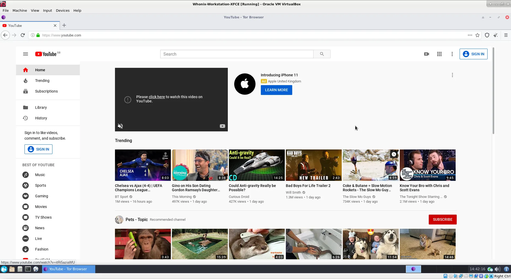
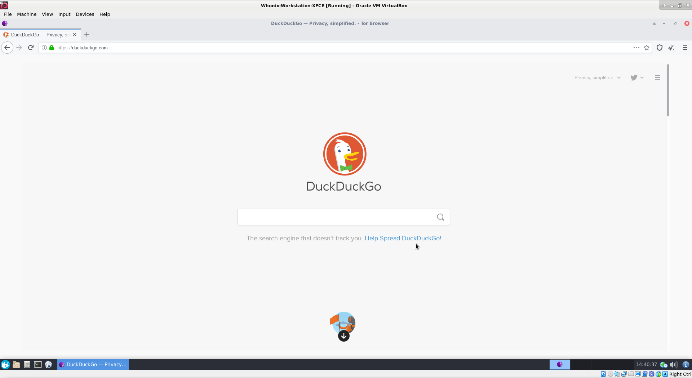
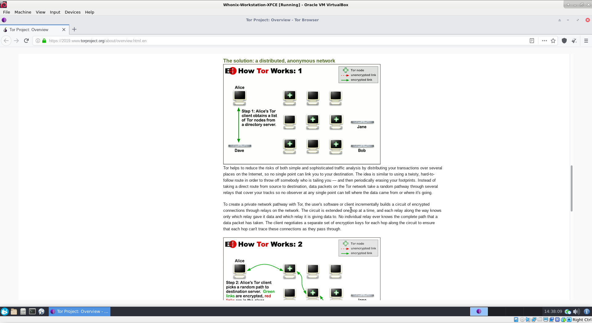
 Warning: Only Tor Browser is recommended for use in
Whonix when browsing the Internet. [1]
Warning: Only Tor Browser is recommended for use in
Whonix when browsing the Internet. [1]
Tor Browser [2] is a fork of the Mozilla Firefox ESR web browser. It is developed by The Tor Project and optimized and designed for Tor, anonymity, and security. [3] Most users will have browsed with Firefox and will be familiar with the user interface, which resembles those found in other popular, modern browsers. [4]
It is strongly encouraged to read this entire chapter so Tor Browser is used effectively and safely on the Whonix platform. Advanced users may also be interested in the Tor Browser Adversary Model. Regularly consult the Tor Project blog to stay in tune with Tor / Tor Browser news and the latest release information. The Tor Browser release schedule for each platform can also be found here.
Anonymity vs Pseudonymity
If browsers other than Tor Browser are used in Whonix, the IP address and Domain Name Service (DNS) requests [5] are still protected (proxy obedience). However, only Tor Browser provides protocol-level cleanup, which includes unique features like state separation, network isolation, and anonymity set preservation.
In stark contrast to regular browsers, Tor Browser is optimized for anonymity and has a plethora of privacy-enhancing patches and add-ons. [6] By sharing the Fingerprint with around two million other people, [7] Tor Browser users "blend in" with the larger population and better protect their privacy.
Browsers other than Tor Browser
 Warning: Using regular browsers is pseudonymous rather than anonymous.
Warning: Using regular browsers is pseudonymous rather than anonymous.
Encryption
HTTPS Encryption
It is important to understand the difference between HTTP and HTTPS: [8]
Hypertext Transfer Protocol Secure (HTTPS) is an extension of the Hypertext Transfer Protocol (HTTP). It is used for secure communication over a computer network and is widely used on the Internet. In HTTPS, the communication protocol is encrypted using Transport Layer Security (TLS) or, formerly, its predecessor, Secure Sockets Layer (SSL). The protocol is therefore also often referred to as HTTP over TLS or HTTP over SSL.
The principal motivation for HTTPS is authentication of the accessed website and protection of the privacy and integrity of the exchanged data while in transit. ...
HTTPS Advantages
 Only rely on services providing HTTPS when sensitive information is sent
or received. Otherwise, passwords, financial / personal information, or
other sensitive data can be easily stolen or intercepted by
eavesdroppers. HTTP webpage contents can also be modified on their way
to the browser for malicious purposes.
Only rely on services providing HTTPS when sensitive information is sent
or received. Otherwise, passwords, financial / personal information, or
other sensitive data can be easily stolen or intercepted by
eavesdroppers. HTTP webpage contents can also be modified on their way
to the browser for malicious purposes.
HTTPS advantages include: [8]
- Authentication of the website and web server that is being communicated with.
- Protection against Man-in-the-middle attacks.
- Bidirectional encryption of communications between a client and server. This protects against eavesdropping and tampering with or forging communication contents.
- A reasonable expectation that the website being communicated with is genuine. [9]
In the Tor Browser context, this means HTTPS should be preferred over HTTP so communication is encrypted while browsing the Internet. While traffic is encrypted throughout the Tor network, the exit relay (third of three servers) can see traffic sent into Tor if it is plain HTTP. If HTTPS is used, the exit relay will only know the destination address. [10]
As an example, the screenshot below captures the browser appearance when visiting the Whonix website. [11]
Figure: A Secure Connection to www.whonix.org
Take note of the small, left-hand area of the address bar. Indicators
of an encrypted connection are: www.whonix.org is
highlighted with a padlock and "Secure
Connection" in green writing, and the URL begins with https:// instead of http://.
HTTPS-Only Mode
Nowadays, when visiting a website that does not support encryption
(HTTPS), Tor Browser will show a warning. This is because
HTTPS-Only Mode is now enabled by default in Tor Browser.
Figure: Tor Browser HTTPS-Only Mode Alert - Warning when visiting an unencrypted (HTTP only) website
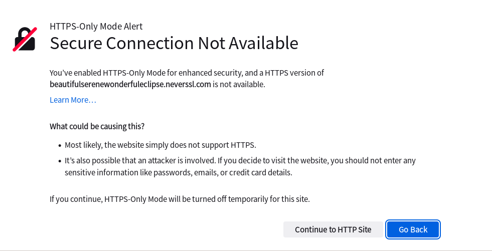
HTTP / HTTPS Connections with and without Tor
The following figures from EFF provide an overview of HTTP / HTTPS connections with and without Tor, and what information is visible to various third parties. The descriptors are as follows: [12]
Potentially visible data includes: the site you are visiting (SITE.COM), your username and password (USER/PW), the data you are transmitting (DATA), your IP address (LOCATION), and whether or not you are using Tor (TOR).
Figure: Tor and HTTPS
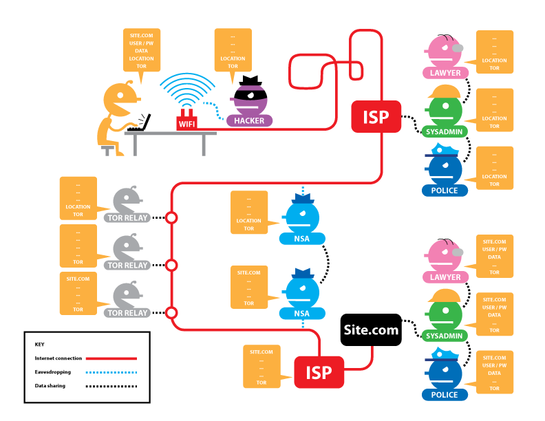
Figure: Tor and No HTTPS
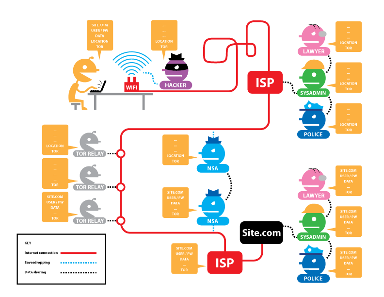
Figure: No Tor and HTTPS
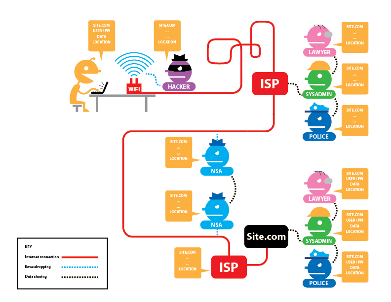
Figure: No Tor and No HTTPS
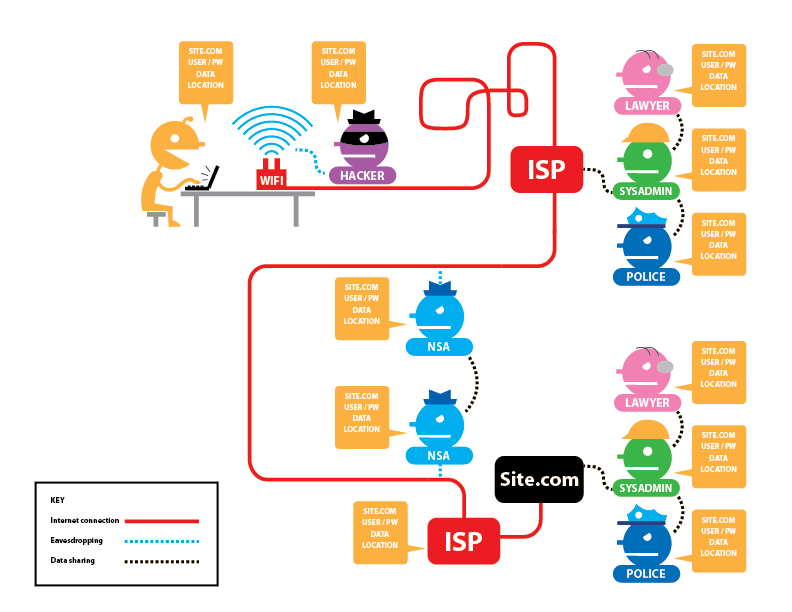
Onion Services Encryption
Whenever possible, utilize Onion Services (.onion addresses) so
communications and web browsing stay within the Tor network. These
resources are still commonly referred to as "hidden services," even when
their location is publicly known. [13]
Onion Services Advantages
URLs ending in the .onion extension provide a superior
level of security and privacy since the connection forms a tunnel that
is encrypted (end-to-end) using a random rendezvous point within the Tor
network; HTTPS is not required. These connections also incorporate perfect forward
secrecy (PFS). PFS ensures that the compromise of long-term keys
does not affect past session keys. As a result, past encrypted
communications and sessions cannot be retrieved and decrypted if
long-term secret keys or passwords are compromised in the future by
adversaries. [14]
Onion services provide several other benefits: [15]
- Passive surveillance by both network observers and the Tor exit node is prevented, unlike the plain Tor + HTTPS configuration. Adversaries cannot easily determine which destination is being accessed.
- Onion services establish "rendezvous points" in the Tor network for web services, meaning neither the hosting service nor the user can discover the other's network identity.
- Onion services can be combined with SSL/TLS to provide additional protection. Only a handful of sites currently offer this service with v3 onions, such as DuckDuckGo: https://duckduckgogg42xjoc72x3sjasowoarfbgcmvfimaftt6twagswzczad.onion/ [16] [17] [18]
- Onion services do not use the insecure DNS system. Strong
authentication comes from the self-authenticating address, where the
address itself forms a cryptographic proof of the
.onionservice's identity. [19] [20]
To learn more about how onion services work, refer to the technical description.
Tor Browser Add-Ons
Introduction
Any default add-ons that are installed in Tor Browser should not be
removed or disabled in the about:addons page. Tor developers
have considered the security and anonymity benefits of this
configuration, even though NoScript
blocking is disabled (JavaScript is enabled) in Tor Browser by
default (see footnote). [21] Developers have reasoned
that this helps to avoid feature breakage and focuses efforts on
designing a private browsing environment that does not rely on
filters.
NoScript
NoScript is a free, open-source extension that comes bundled with Tor Browser and other Mozilla-based web browsers. NoScript can provide significant protection with the correct configuration: [22]
By default, NoScript blocks active (executable) web content, which a user can wholly or partially unblock by whitelisting a site or domain from the extension's toolbar menu. Sites can be set as '
allowed', 'trusted', or 'untrusted', and the whitelist persists between sessions. Temporarily allowed sites won't be added to the permanent whitelist and work only until the browser session ends. Active content may consist of JavaScript, web fonts, Java, Flash, Silverlight, and other plugins. The add-on also offers specific countermeasures against security exploits. ... This is based on the assumption that malicious websites can use these technologies in harmful ways.
NoScript protects against cross-site scripting (XSS), whereby attackers inject malicious client-side scripts into destination web pages, bypassing the same-origin policy. [23] The same-origin policy refers to web browser enforcement of permissions -- scripts in the first web page are usually only allowed to access data in a second web page if they have the same origin (URL scheme, hostname, and port number). [24]
When NoScript is enabled, a host of tracking/profiling services are neutralized because they rely on JavaScript. For example, various operating system and browser configuration details are revealed if JavaScript is not disabled. [22] Another unintended benefit concerns the use of system resources. When JavaScript is disabled, studies reveal that bandwidth consumption can be reduced by more than 40 percent on the top 150 Alexa websites. Similarly, fewer system resources are required to display a web page in the browser. [25]
Security vs Usability Trade-off
 The Security Slider (see
further below) also involves a security versus usability trade-off.
Higher slider levels improve security and reduce usability, while the
opposite is true of other settings. Fingerprinting risks are greatly
reduced at higher slider levels, but some site functionality may also be
lost.
The Security Slider (see
further below) also involves a security versus usability trade-off.
Higher slider levels improve security and reduce usability, while the
opposite is true of other settings. Fingerprinting risks are greatly
reduced at higher slider levels, but some site functionality may also be
lost.
In the stock Tor Browser configuration, JavaScript is enabled by default for greater usability. The Tor Project FAQ provides a rationale for this decision: [26]
We configure NoScript to allow JavaScript by default in Tor Browser because many websites will not work with JavaScript disabled. Most users would give up on Tor entirely if a website they want to use requires JavaScript because they would not know how to allow a website to use JavaScript (or that enabling JavaScript might make a website work).
There's a trade-off here. On the one hand, we should leave JavaScript enabled by default so websites work the way users expect. On the other hand, we should disable JavaScript by default to better protect against browser vulnerabilities (not just a theoretical concern!). But there's a third issue: websites can easily determine whether you have allowed JavaScript for them, and if you disable JavaScript by default but then allow a few websites to run scripts (the way most people use NoScript), then your choice of whitelisted websites acts as a sort of cookie that makes you recognizable (and distinguishable), thus harming your anonymity.
The take-home message is disabling all JavaScript with whitelist-based, pre-emptive script-blocking may better protect against vulnerabilities (many attacks are based on scripting), [27] but it reduces usability on many sites and acts as a fingerprinting mechanism based on the select sites where it is enabled. [22] On the other hand, allowing JavaScript by default increases usability and the risk of exploitation, but the specific fingerprint has more in common with the larger user pool. [28] [29] [30]
Developers are unaware of any JavaScript vulnerabilities that could compromise Whonix anonymity. That said, it is inadvisable to change NoScript settings in Tor Browser unless the potential impacts are known. To enable/disable JavaScript, Java, and/or plugin execution, left-click the NoScript status bar icon or use the contextual menu. [31] Permissions can be granted either temporarily or on a permanent basis using a whitelist. "Temporarily Trusted" will only enable a script(s) for that site until the browser session is closed or until the permission is manually revoked.
For further information, refer to the NoScript website and features overview, or the Torbutton design document.
You should Disable JavaScript by Default!
As noted in the previous section, disabling JavaScript by default may worsen fingerprinting. There are several other reasons why Whonix has not made any modifications:
- Different development team: Tor Browser is developed by a
different development team, The Tor Project. From Whonix's (and others')
perspective, this is often called upstream because Whonix, as a Linux
distribution, is downstream from the provider of the software project
Tor Browser. For an elaboration on the organizational differences, see
 Linux User Experience versus Commercial Operating Systems.
Linux User Experience versus Commercial Operating Systems. - Technical challenges: There is no stable application-programmable interface (API) to reliably disable JavaScript by default in Tor Browser.[32] Whonix developers cannot use such an API, and there won't be one[33] unless someone contributes this feature to upstream, Tor Browser.[34] Therefore, making this change by default as a Linux distribution is difficult.[35]
- Not a browser project: Whonix is not a "secure browser" project. Instead, its focus is on creating a stable, reliable anonymity distribution that aligns with best practice security and privacy principles. This approach is informed by educated researchers in the field and is based on other upstream projects as much as possible. Similarly, neither Debian nor Qubes develops secure browser sub-projects; instead, they bundle existing upstream projects.
- User support: As per the Self Support First Policy, support requests, bug reports, and feature requests are [[unspecific|unspecific to Whonix and can almost always be redirected to upstream, the Tor Browser, a much larger and better-funded project.
- Fingerprinting: Possible fingerprinting or security issues with default settings in Tor Browser fall under the domain of core Tor developers.
- Shared fingerprint: Having Whonix share the fingerprint of other Tor Browser users might be beneficial for anonymity.
- Limited resources: Whonix has limited manpower, meaning the
resources do not exist to create a more secure browser, even if it were
desirable.[36] No suitable, ethical, reliable
Open Source Business Model has been found or developed yet.
- Simpler security audits: Tor Browser is not significantly modified for the same reasons Whonix does not modify or attempt to improve Tor.[37]
- Legal: Potential legal and trademark-related issues.[38]
Experienced Tor developer Mike Perry has provided justification for enabling JavaScript by default in a tor-talk mailing list topic. See "Tor Browser disabling Javascript anonymity set reduction". In summary, Tor Button and Tor Browser patches handle the most serious JavaScript concerns, such as IP address/location bypass problems.[39]
Due to the loss of functionality, disabling JavaScript by default might place Whonix users in a small subset of the Tor Browser population. The JavaScript behavior of the broader population remains an open research question, so it is safest to avoid changes that might reduce the anonymity set. Keep in mind that fingerprinting potential also depends on Tor Browser's security slider settings. Ultimately, individuals are free to turn JavaScript on or off, depending on their security, anonymity, and usability preferences.
NoScript Custom Setting Persistence
It is possible to save custom NoScript settings between browser restarts with a preference.[40] This preference is disabled by default, meaning custom NoScript settings will not persist across successive Tor Browser sessions.
Warning
This preference sacrifices privacy for convenience and is therefore not recommended. While frequently visited sites do not require the constant enabling/disabling of scripts across separate Tor Browser sessions, a number of anonymity risks are introduced:[41]
- Disk hygiene: Tor Browser is designed to prevent the persistent storage of history records and other on-disk information. This preference violates that design principle by allowing the storage of NoScript per-site permissions, thereby increasing the chance an adversary can extract valuable information from that data.
- Long-term fingerprinting vectors: Persistent per-site settings allow a website to profile Tor Browser users, particularly if first-party isolation is not enforced. For example, consider the negative anonymity impact of whitelisting Google or Facebook, since their advertisements and tracking widgets are ubiquitous.
- Expert opinion: Experienced Tor developers have confirmed that enabling this preference is dangerous and caution should be exercised. [42]
Persistent NoScript Settings
 Note:
Note:
- By defining custom settings in NoScript, this will override the current Tor Browser Security Slider setting.
- When
extensions.torbutton.noscript_persistis set totrue, these changes will persist across Tor Browser restarts.
If this is acceptable, in the Tor Browser address bar:
"Type"about:config→"Press"enter→"Choose"I accept the risk!→"Type"extensions.torbutton.noscript_persist→"Toggle"to true[43]
This preference will be overridden and all custom per-site settings lost if:
- The security slider setting is changed afterward; [42]
extensions.torbutton.noscript_persistis set tofalseagain, [44] since NoScript settings are reset after Tor Browser syncs with the Security Slider position.
Non-default Add-ons
As Tor Browser is based on Firefox, any browser add-on compatible with Firefox can also be installed in Tor Browser. In this context, add-ons are the collective name given to extensions, themes, and plugins: [45]
- Extensions add new features to Firefox or modify existing ones, such as video downloaders, ad blockers, and more.
- Themes change the appearance of the browser, including buttons, menus, and the background image.
- Browser plugins add support for Internet content and often include patented formats like Flash and Silverlight, which are used for video, audio, online games, and more.[46]
Non-default Add-on Risks
The Tor Project explicitly warns against using non-default add-ons with Tor Browser: [45]
However, the only add-ons that have been tested for use with Tor Browser are those included by default. Installing any other browser add-ons may break functionality in Tor Browser or cause more serious problems that affect your privacy and security. It is strongly discouraged to install additional add-ons, and the Tor Project will not offer support for these configurations.
...
Video websites, such as Vimeo, make use of the Flash Player plugin to display video content. Unfortunately, this software operates independently of Tor Browser and cannot easily be made to obey Tor Browser's proxy settings. It can therefore reveal your real location and IP address to the website operators or to an outside observer. For this reason, Flash is disabled by default in Tor Browser, and enabling it is not recommended.
Recommendations
 Warning: For the safest Tor Browser experience, it is
recommended to avoid Java, JavaScript, Flash, themes, browser plugins,
and other non-default add-ons.
Warning: For the safest Tor Browser experience, it is
recommended to avoid Java, JavaScript, Flash, themes, browser plugins,
and other non-default add-ons.
The problem with non-default add-ons is that they often contain non-free software, which can lead to the linkage of activities conducted under one pseudonym. They also worsen fingerprinting and introduce attack vectors in the form of remote exploits.
This advice holds true even though Whonix is configured to prevent these applications (along with malware) from leaking the real external IP address, even if they are misconfigured (see Features). Before installing non-default add-ons, consider alternatives such as HTML5 or online media converters. [47]
Torbutton
 As noted in the Tor Button Design entry, the release of
Tor Browser 9.0 resulted in both the Torbutton and Tor Launcher
extensions being tightly integrated into Tor Browser:
As noted in the Tor Button Design entry, the release of
Tor Browser 9.0 resulted in both the Torbutton and Tor Launcher
extensions being tightly integrated into Tor Browser:
... Torbutton has been moved from the URL bar and neither appears on the
about:addonspage. Other changes include the New Identity function shifting to the URL bar and the New Tor Circuit function being accessible via the hamburger menu. ... No functionality has been lost -- Torbutton's functions in Tor Browser behavior have simply moved into direct Firefox patches.
Tor alone is not enough to protect anonymity and privacy while browsing the Internet. All modern web browsers support JavaScript, Adobe Flash, cookies, and other features that are capable of defeating the anonymity [48] provided by the Tor network.
In Tor Browser, these features are managed within the browser itself, as it is a modified (patched) version of Firefox. It contains direct patches (based on the former Torbutton extension) that address application-level security and privacy concerns in Firefox. This means many types of active content are disabled. [49]
It is recommended to learn more about Fingerprinting and Data Collection Techniques to better understand potential threats. Advanced users can also review detailed information about the former Torbutton design and its various functions here.
New Identity Function
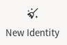
There are two ways to get a new identity in Tor Browser. Choose one.
- A) Restart Tor Browser Method: Simply close all Tor Browser windows and restart Tor Browser. Or,
- B) New Identity Button Method: Use the Tor Browser "New Identity" button. It clears the browser state, closes all browser tabs, and obtains a fresh Tor circuit for future requests. [50]
There are two ways to access the New Identity button. Choose one.
Left-click the Hamburger Icon→Select "New Identity"Left-click the 'broom' icon in the URL bar
Figure: New Identity in Tor Browser
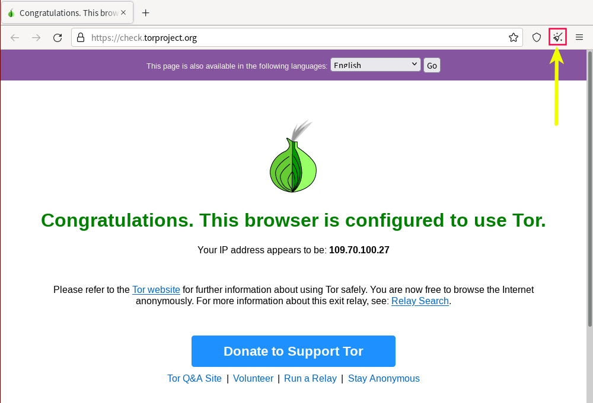
 The New Identity feature will likely create a new Tor exit
relay and a new IP address, but this is not guaranteed.
The New Identity feature will likely create a new Tor exit
relay and a new IP address, but this is not guaranteed.
Sometimes Tor only replaces the middle relay while using the same Tor exit relay; this is by design and the Tor default.
In Qubes-Whonix™, the safest option when performing sensitive activities is using a Whonix-Workstation™ Disposable. To completely separate distinct activities, shut down the Disposable and create a new one between sessions.
Please read New Tor Circuit Design and the New Identity Design to learn more about this option and its limitations. It is also recommended to read about Stream Isolation for further background information and even stronger isolation features.
New Tor Circuit Function
 Warning: This function does not attempt to clear Tor
browsing session data or unlink activity, unlike the "New Identity"
feature.
Warning: This function does not attempt to clear Tor
browsing session data or unlink activity, unlike the "New Identity"
feature.
The "New Tor Circuit for this Site" feature creates a new circuit for the current Tor Browser tab, including other open tabs or windows from the same website. [51] If it is necessary to separate contextual identities, it is always safer to close and then Restart Tor Browser.
There are several potential use cases for this feature: [52]
- The Tor exit relay is located in a country that negatively affects the presentation of the website due to language localization.
- The site is censored due to the current Tor exit relay in use (caused by Tor IP address blacklisting).
- To bypass Google CAPTCHA or reCAPTCHA systems protecting sites from abuse if these are showing unsolvable captchas or no captchas at all.
- Connections to websites become unresponsive or slow.
- To change the Tor exit relay IP address without losing all open tabs.
To use this function: Left-click the Hamburger Icon →
Select "New Tor Circuit for this Site"
Figure: New Tor Circuit Button in Tor Browser
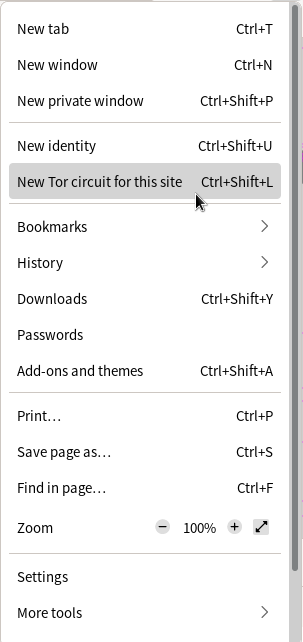
Advanced users who want to learn more about this function should refer to the New Tor Circuit Design entry.
Check for Tor Browser Update
Notifications will automatically appear if a Tor Browser update is available; see Tor Browser Internal Updater for further information and screenshots of this process. Note that multiple methods exist for updating Tor Browser.
To manually check for Tor Browser updates: Enter about:preferences in the URL bar
→ Scroll down to "Tor Browser Updates" →
Click "Check for updates"
Disabled Functions
Readers who are interested in why the "Open Networking Settings" and "Tor Circuit View" features have been disabled in Whonix can learn more here.
Tor Browser: How-To
Security Slider
Tor Browser includes a "Security Slider" that allows the disabling of certain web features that can be used to compromise security and anonymity. At present there are three levels: "Safest", "Safer" and "Standard". It is necessary to make a trade-off between security, usability and privacy. At the higher levels the slider will prevent some sites from working properly. [53] Note that as of Tor Browser release v8.5, the security slider function has shifted to the taskbar. [54] [55]
To use this feature:
Click Security Level button (taskbar 'shield') →
Click "Advanced Security Settings..." →
Select desired security level
Figure: Tor Browser Security Slider
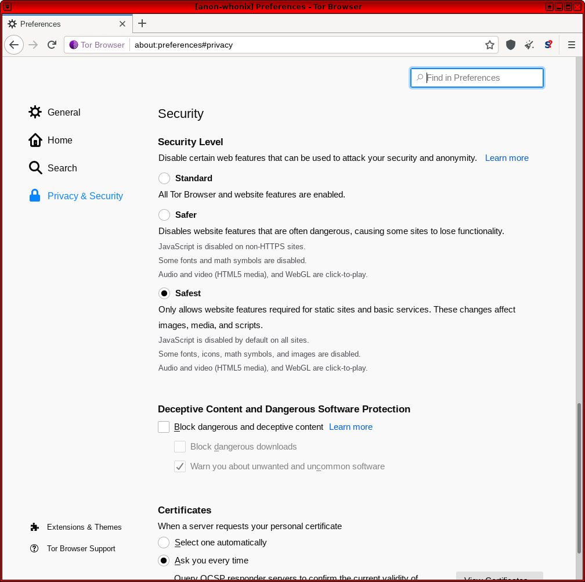
To learn more about the exact effect of each setting level, refer to the Security Slider design entry. For information on related Tor plans for redesigning browser security controls, see here.
Start Tor Browser
From the Menu
Start Tor Browser.
Using Tor Browser Starter by Whonix. [56]
If you are using Qubes-Whonix.
Qubes Start Menu →
Whonix-Workstation App Qube (commonly called anon-whonix)
→ Tor Browser
If you are using Non-Qubes-Whonix.
Start Menu → Tor Browser
From the Command Line
Using Tor Browser Starter by Whonix.
From the command line, Tor Browser can either be started normally, in verbose mode or in debugging mode (see next sections).
To start Tor Browser "normally" in a terminal, run.
torbrowser
In Verbose Mode
Using Tor Browser Starter by Whonix.
This will show verbose output messages which might be useful for the user to identify eventual issues issue. In doubt, Support might help interpreting these messages. Verbose mode is not useful unless there are actual issue or for purpose of curiosity. In the latter case, please se support request policy.
To start Tor Browser Starter by Whonix in verbose mode in a terminal, run.
bash -x torbrowser
Manual Start
If Tor Browser problems emerge, launch it from the command line for detailed output. This will show verbose output messages which might be useful for the user to identify the issue. In doubt, Support might help interpreting these messages.
Starting Tor Browser directly without Tor Browser Starter by Whonix. [57]
~/.tb/tor-browser/Browser/start-tor-browser
In Debugging Mode
Same as above in debugging mode for even more detailed output.
Starting Tor Browser directly without Tor Browser Starter by Whonix.
To start Tor Browser in debugging mode, run.
~/.tb/tor-browser/Browser/start-tor-browser --debug
Successful Tor Browser Connection
If Tor Browser successfully launches and connects to the Tor network, Check Torproject should show the following message.
Figure: Successful Tor Network Check in Whonix
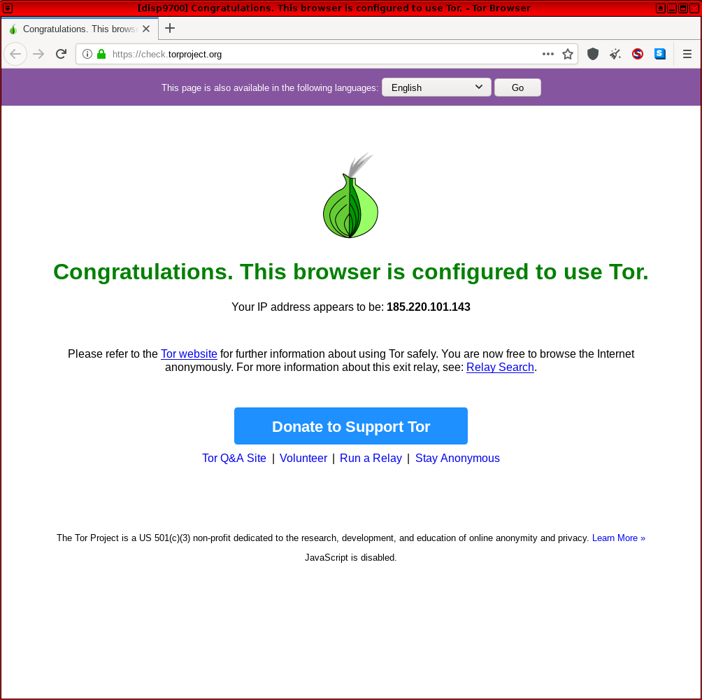
File Downloads
Warnings
Whonix protects against the threats outlined below, such as files that inadvertently or maliciously attempt to reveal the real IP address of the user, or third-party, external applications that can leak information outside of Tor. Despite this protection, it is recommended to always follow best safety practices.
Do not Open Documents Downloaded via Tor while Online
The Tor Project explicitly warns against opening documents handled by external applications. The reason is documents commonly contain Internet resources that may be downloaded outside of Tor by the application that opens them. [58]
This warning is not strictly relevant to the Whonix population since all traffic is forced over Whonix-Gateway™ and the IP address will not leak. Nevertheless, for better safety files like PDFs and word processing documents should only be opened in offline VMs.
Malicious files or links to files pose a greater threat and can potentially compromise your system. Therefore, follow the wiki advice and avoid opening random links or files in Whonix-Workstation™. Instead:
Platform specific.
- Non-Qubes-Whonix: The file should only be opened in a separate, offline Whonix-Workstation.
- Qubes-Whonix™: It is preferable to sanitize the PDF or open the file or link in a Disposable.
Do not Torrent over Tor
See File Sharing.
Secure Downloads
Preventing SSLStrip Attacks
 If clicking or pasting a download link, make sure it is
If clicking or pasting a download link, make sure it is
https://. The
s in
https:// stands
for "secure".
A common misconception is that a secure, green padlock and a
https:// URL
makes any download from that particular website secure. This is not the
case because the website might be redirecting to http. In
fact, an SSLstrip
attack might succeed if a link is pasted or typed into the address
bar without the https:// component
(e.g. www.torproject.org instead of https://www.torproject.org)
-- the reason is a padlock is not visible; it just appears empty.
[59]
To avoid this risk and similar threats, always explicitly type or
paste https:// in the URL / address
bar. The SSL certificate button or padlock will not appear, but that
is nothing to be concerned about. Unfortunately, few people follow this
sage advice; instead most mistakenly believe pasting or typing
www.torproject.org into the address bar is safe.
Other Precautions
For improved safety when downloading files or installing software, follow the advice below.
Category |
Recommendations |
|---|---|
File Source and Verification |
|
Consider using Multiple Whonix-Workstation when downloading and installing additional software. It is safer to compartmentalize discrete activities and minimize the threat of misbehaving applications. |
|
Onion Service Downloads |
Files should be downloaded from Onion Services (via .onion addresses)
whenever possible. Onion service downloads improve security for several
reasons: |
Navigating Tor Browser Downloads
For those who regularly download Internet files, Tor Browser's
default download folder is inconvenient. For example, if the sample
image below was downloaded with Tor Browser, the download path is
/home/user/.tb/tor-browser/Browser/Downloads by default. It
is time-consuming to navigate to this folder so far down the directory
tree.
Figure: Default Tor Browser Download Folder
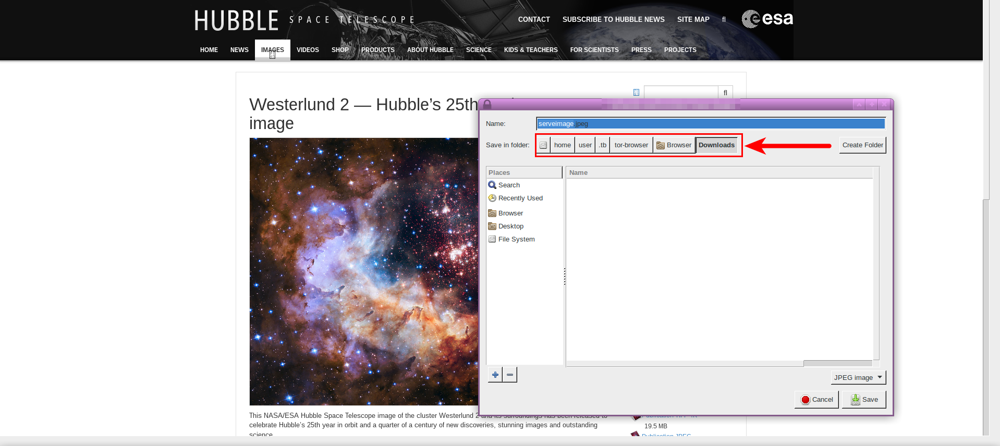
To make things simpler, the following steps change Tor Browser
preferences so files are saved directly inside
/home/user/Downloads.
1. Navigate to Tor Browser preferences.
Choose one of the following three methods:
Click the "hamburger" symbol→Click PreferencesNavigate to theEdit menu→click Preferences→click General tab- Enter
about:preferencesin the Tor Browser address bar.
Figure: Tor Browser Preferences
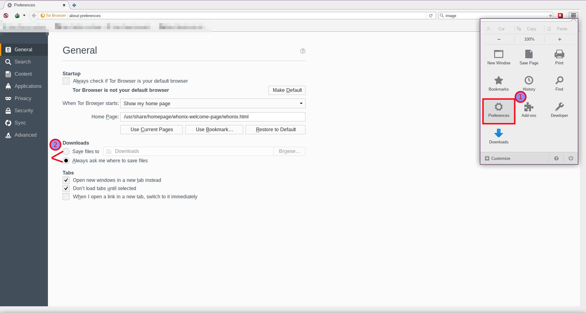
2. Select the
Save files to download
option.
Figure: Custom Download Path Option
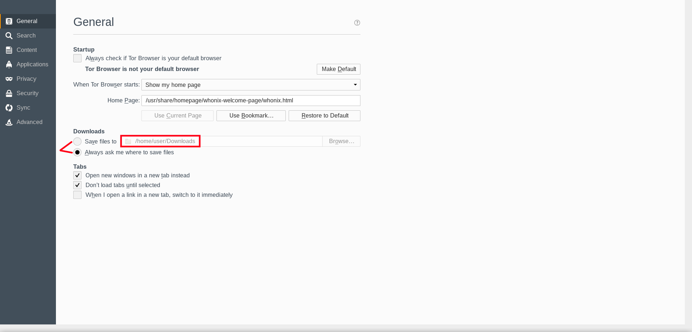
3. Change the default download folder location.
It is recommended to set /home/user/Downloads as the
custom path.
Figure: Set the Custom Download Path
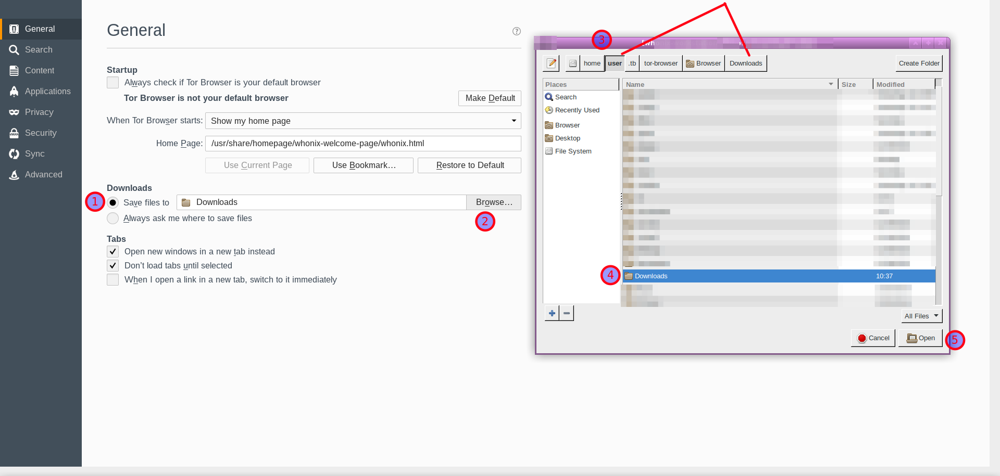
User files will now be downloaded to the
/home/user/Downloads folder. Navigate to this folder using
either file manager
or terminal.
To access files that were stored inside the "wrong" download folder, please press Expand on the right.
1. Start Thunar.
2. Enable the hidden files view.
To show hidden files:
Navigate to the View menu
→
click Show Hidden Files
Figure: Hidden Files in Thunar
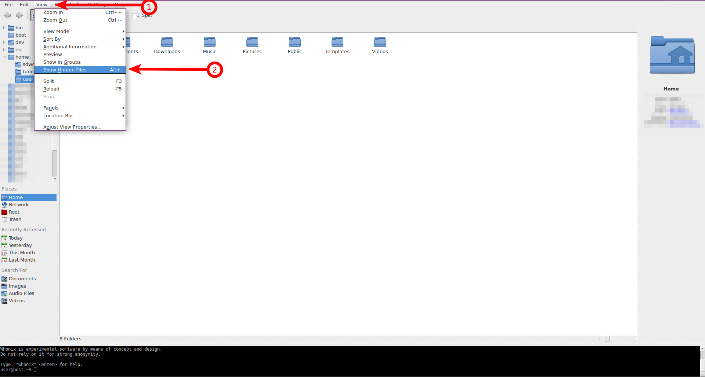
3. Navigate to the downloaded files.
Double-click the .tb folder
Figure: Hidden Tor Browser Folder
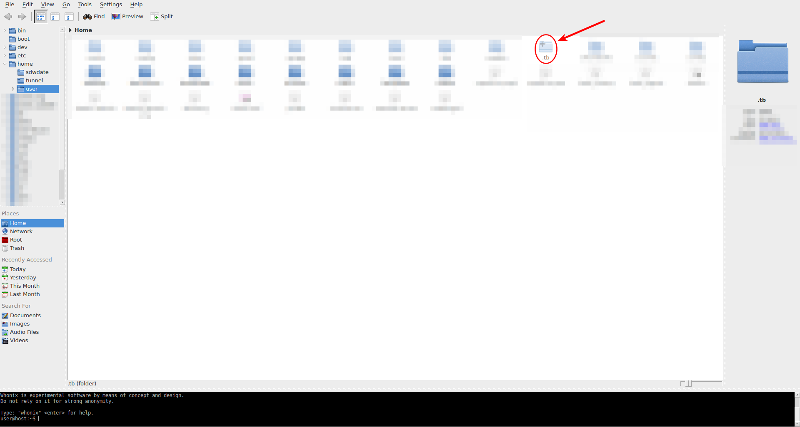
Use the following path: tor-browser →
Browser → Downloads
Figure: Default Tor Browser Download Folder
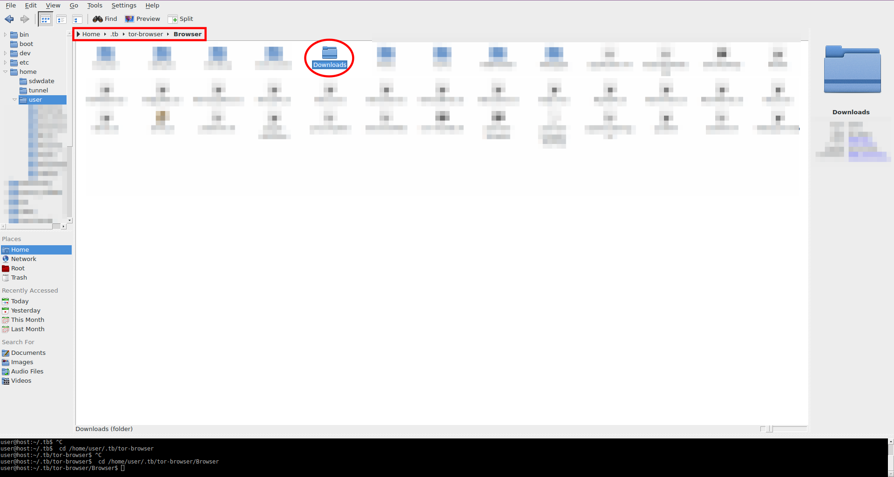
Now it is possible to review the downloaded files.
Figure: Downloaded Files
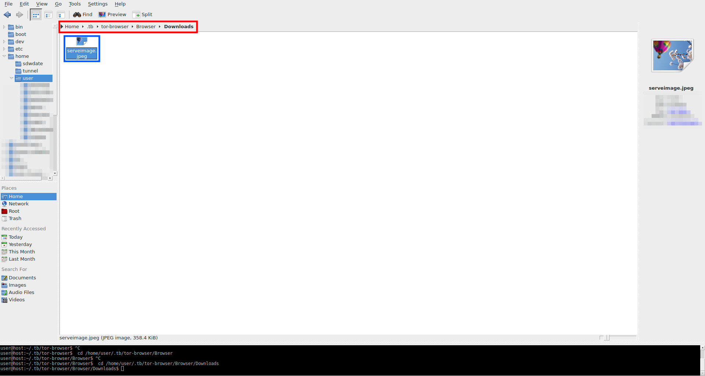
Savings Files in Shared Folder
For advanced users only, see Saving Files in Shared Folder.
Onion Client Authorization
There are two options to setup Onion Service Client Authentication. Choose either option A) or B).
- A) Tor Browser Onion Client Authorization, see below. Or,
- B) Onion Service Client Authentication setup on Whonix-Gateway™.
These options should never be combined for the same onion service.
Figure: Tor Browser Onion Client Authorization [60]
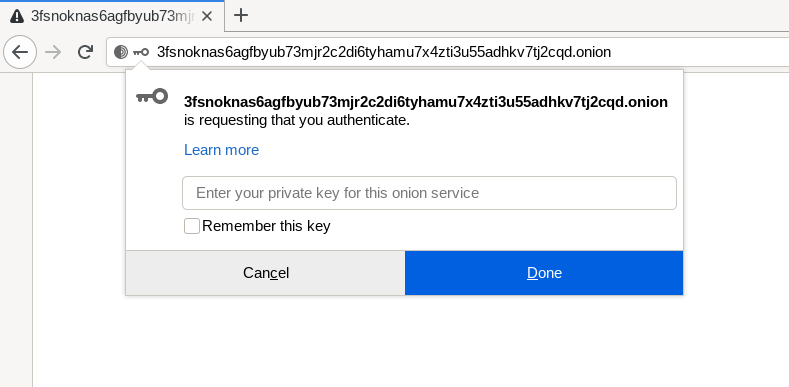
Before Tor Browser Onion Client Authorization in Whonix can be used, in other words, before private keys can be pasted into Tor Browser's Onion Client Authorization popup, an additional configuration step must be applied on Whonix-Gateway.
Tor Browser Onion Client Authorization requires additional Tor control protocol access. A Whonix-Gateway configuration change is therefore necessary for full functionality; see instructions below.
This is not enabled by default as this is a potential cross VM linking identifier in context of using Multiple Whonix-Workstation. When one Whonix-Workstation would login to an authenticated onion v3 services, this would login potential other Whonix-Workstation too. In any case, Whonix is the safest choice for running it.
To setup Tor Browser Onion Client Authorization, perform the following instructions.
1. Extend the onion-grater whitelist.
On Whonix-Gateway (sys-whonix).
Add onion-grater profile.
sudo onion-grater-add 40_onion_authentication
2. Restart Tor Browser in Whonix-Workstation.
3. Information.
Before proceeding, two things are required:
- A) The onion domain name, and
- B) The onion client authorization private key.
4. Learn how a client authorization private key looks.
Sample onion client authorization private key.
NOTE: The user must not use the following private key because it is only an example and will not work.
XAJKD2BRVOI4C4IHK2OWF3EKIJNVIDBVCP2IM2Z2ZHPN456HNRZA5. Open the onion service link in Tor Browser in Whonix-Workstation.
6. Get the onion client authorization private key from the onion service host.
The onion client authorization private key can only be provided by the onion service administrator.
8. Use Tor Browser Onion Client Authorization normally.
9. Done.
Tor Browser Onion Client Authorization setup is complete.
Troubleshooting:
- Consider to always check the
Remember this keyoption. In the experience of the author, this works more reliable. - Make sure regular torified internet connections are functional.
- Make sure regular connections to unauthenticated onions service are functional.
- When setting up your own onion service:
- Exercise setting up the following outside of Whonix first before attempting to replicate the same inside of Whonix for simplicity. See also unspecific.
- Exercise setting up a unauthenticated onion service first before attempting setting up an authenticated onion service.
- Exercise authenticated onion service but first attempt to use it without using Tor Browser's Onion Client Authorization feature. Try using it using Tor on the command line first.
- Only then attempt the same using an authenticated onion service in combination with Tor Browser's Onion Client Authorization feature.
Browser Language
In 2021, the stable and experimental Tor Browser binaries with additional language packs support 34 languages. Recent additions include: Catalan, Irish, Indonesian, Icelandic, Norwegian, Danish, Hebrew, Swedish, Traditional Chinese, Macedonian and Romanian. [62] [63] [64] For instructions on changing the Tor Browser interface to a language other than English, see Tor Browser Language. [65]
Local Connections
 Web HTTP(S)/SOCKS proxies have different instructions and will not work
with these steps, see Tor Browser Proxy Configuration.
Web HTTP(S)/SOCKS proxies have different instructions and will not work
with these steps, see Tor Browser Proxy Configuration.
Sometimes it is necessary to access the local application interface
on 127.0.0.1 in order to run specific applications like
I2P. [66] Due to potential fingerprinting and information
leakage risks, this behavior is no longer possible in Tor Browser unless
an exception is configured. [67] [68]
To configure an exception for local connections in Tor Browser: [69]
URL bar → Type: about:config
→ Press Enter key → search for and modify
network.proxy.no_proxies_on → write addresses separated by
comma: localhost, 127.0.0.1 → click "Save"
The configured exception means a small trade-off in privacy, but it is much safer than using another browser (see Local Connections Exception Threat Analysis).
Recommendations
For better anonymity:
- Browse with JavaScript disabled in Tor Browser and enable it only when needed. Disabled JavaScript mitigates these browser fingerprinting issues completely.
- Set passwords for web interfaces listening on the localhost.
- Run sensitive daemons with local WebGUIs on a separate, dedicated Whonix-Workstation and virtual network instance. TODO: expand or link how to do that
Tor Censorship
 Tor Censorship can mean two different things.
Tor Censorship can mean two different things.
- A) Destination website level: The Geo-blocking outlines Tor blocks by destination websites.
- B) internet service provider (ISP) level: If connections to the Tor network are blocked by the user's ISP, then bridges or other circumvention tools are necessary.
Geo-blocking
A website is unreachable? Shows access denied or a captcha? See Geo-blocking.
AppArmor Confinement
AppArmor can help to protect the user's system and data. It confines programs according to a set of rules that specify what files a given program can access, and with what privileges. This also provides some protection against zero-day attacks and exploits via unknown application flaws. An AppArmor profile for Tor Browser is by default nowadays in Whonix.
Since package apparmor-profile-torbrowser AppArmor is
applied, Tor Browser can only read and write to a limited number of
folders. Permission denied errors are quite common, for example when
trying to download files directly to the ~/home folder.
The workaround for AppArmor denied errors is saving files from Tor
Browser to the ~/Downloads folder that is located within
the ~/home folder. In order to upload files with Tor
Browser, first copy them to that folder.
Harden Tor Browser
Anonymity and safety can be materially improved via: AppArmor, Tor Browser settings, sandboxing, multiple Tor Browser instances, and operation of multiple Whonix-Workstation or Whonix-Workstation Disposables (Qubes-Whonix).
Tor Browser provides reasonable security in its stock configuration. However, mitigating the risk of Tor Browser security breaches makes sense, because it is an untrusted application with a huge attack surface; it is frequently attacked successfully in the wild by adversaries.
Domain |
Recommendations |
|---|---|
Multiple Tor Browser Instances and Whonix-Workstation |
|
Sandboxing and Disposables |
|
Tor Browser Series and Settings |
|
Update Tor Browser
Introduction
 It is recommended to follow The
Tor Project blog to stay informed about recent updates.
It is recommended to follow The
Tor Project blog to stay informed about recent updates.
Unfortunately, updating Tor Browser is more complex than regular system updates due to technical limitations outside of Whonix control. [77] However, the following instructions will keep Tor Browser up-to-date at all times.
Overview of Tor Browser Installation and Update Methods
Method |
Summary |
Best Used When |
Drawbacks |
|---|---|---|---|
A downloader that retrieves, verifies, and installs Tor Browser. Ideal for fresh installs or reinstalls. |
|
|
|
Built into Tor Browser by The Tor Project. Automatically fetches and applies updates in the background or manually. |
|
|
|
Manual download and signature verification of Tor Browser from torproject.org |
|
|
|
Warning: Never continue to use an outdated version of Tor Browser. This can degrade anonymity and may even lead to compromise of the Whonix-Workstation VM. [78]
Tor Browser Downloader by Whonix
tb-updater Introduction
Tor Browser Downloader by Whonix is a usability tool designed to automate the process of downloading and installing the Tor Browser inside Whonix-Workstation. It simplifies installation for both Non-Qubes-Whonix and Qubes-Whonix users by handling retrieval, signature verification, and extraction of the latest stable or alpha versions of Tor Browser.
Important: This tool is not an updater. It is incapable of preserving user data such as bookmarks, passwords, or other browser profile settings. For retaining user data across Tor Browser upgrades, use the Tor Browser Internal Updater instead.
The tool supports:
- Initial installation of Tor Browser.
- Re-installation of Tor Browser in case of corruption or failed updates.
- Selecting between stable and alpha versions.
- Optionally downloading over
.onion.
For security, the tool verifies digital signatures and highlights potential downgrade or freeze attacks before proceeding with installation.
The next sections detail how to launch the downloader, perform installation, and configure behavior based on user preferences and threat models.
Installation Process
Note: Tor Browser Downloader (Whonix) is really just a downloader, not an updater. This means it is incapable of retaining user data such as bookmarks and passwords. In order to preserve data, use the Internal Updater method instead.
To use Tor Browser Downloader (Whonix), follow these instructions in Whonix-Workstation.
1. Perform standard ("everyday") upgrades. [79]
2. Launch Tor Browser Downloader.
Select your platform.

If you are using a Non-Qubes-Whonix system, complete the following steps inside Whonix-Workstation.
Start Menu → Applications →
System → Tor Browser Downloader (Whonix)

Qube type selection.

If you are using Qubes-Whonix, to ensure that new App Qubes and Disposables are created with a copy of the latest Tor Browser version, complete the following steps:
Qubes App Launcher (blue/grey "Q") →
Whonix-Workstation Template
(whonix-workstation-18) →
Tor Browser Downloader (Whonix)

If you are using Qubes-Whonix, to re-install the latest Tor Browser version in existing Whonix-Workstation App Qubes, complete the following steps:
Qubes App Launcher (blue/grey "Q") →
Whonix-Workstation App Qube (anon-whonix) →
Tor Browser Downloader (Whonix)

If you are using a terminal, complete the following steps:
update-torbrowser
3. Downloader.
The downloader will show it is checking for updates.
Figure: Checking for Updates
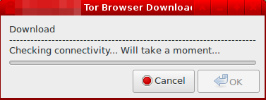
4. Selected the preferred Tor Browser version when prompted.
Select the Tor Browser version and confirm installation. Take heed of the warning in the confirmation box stating the existing Tor Browser user profile (including bookmarks and passwords) will be lost during this process.
Figure: Download Confirmation
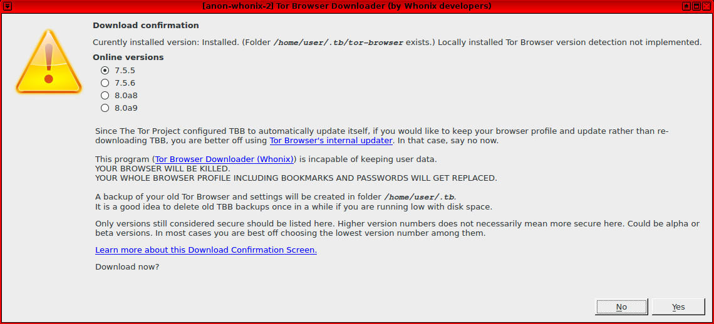
After agreeing to the download process, a progress indicator will be displayed by the downloader. This process can be lengthy depending on the speed of the Tor network connection.
Figure: Downloading Tor Browser
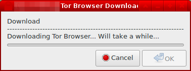
5. Check the Tor Browser signature was correctly verified.
Once the download has finished, the downloader will provide verification (or not) of the cryptographic signature associated with the Tor Browser binary, highlighting the key used to sign it and the date. The downloader will then ask for confirmation to install the package: see Installation Confirmation Notification for steps on identifying a possible targeted attack.
Figure: Tor Browser Installation Confirmation
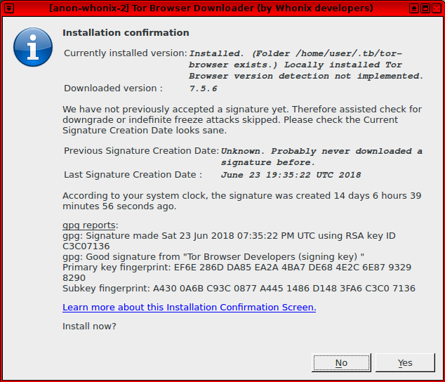
6. Confirm installation of Tor Browser.
If the installation process is confirmed, the downloader will extract Tor Browser.
Figure: Extracting Tor Browser
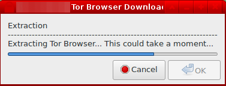
7. Optional: Launch Tor Browser.
In the final step, the downloader will prompt whether the upgraded
Tor Browser should be launched, unless the procedure was completed in a
Qubes Whonix-Workstation Template
(whonix-workstation-18).
Figure: Finalized Tor Browser Installation
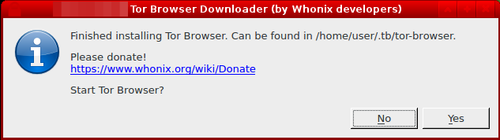
(Also available as CLI version.)
8. Done.
The process has been completed.
Download Confirmation Notification
This step is designed to keep Whonix users safe, since at present there is no reliable and secure way for a program to determine the latest stable version of Tor Browser with reasonable certainty. [80] [81] When the version format changes, the automated parser of version information could falsely suggest:
- An earlier stable version that is still considered secure.
- An alpha series release.
- A beta Tor Browser build.
- A release candidate or nightly Tor Browser build.
Alternatively, one might be targeted by a denial of service, indefinite freeze or rollback (downgrade) attack. [82] [83]
To counter these threats, user intelligence is utilized as a sanity check. The Download Confirmation Notification provides a way to detect such situations and abort the procedure. In this instance, it is recommended to rotate the Tor circuits and attempt the download process again.
Version numbers that are visible under Online versions come from an online resource. The Tor Browser RecommendedTBBVersions versions file is provided by The Tor Project, and is parsed by Whonix Tor Browser Downloader. The Whonix downloader will indicate that no upgrade is required if the installed Tor Browser version matches the up-to-date online version.
TODO: expand.
Installation Confirmation Notification
This step is also designed to protect users, since at present there is no reliable and secure way for a program to determine (with reasonable certainty) if the Tor Browser download was targeted by an indefinite freeze or rollback attack. [84] [85]
When verifying cryptographic signatures, several important aspects must be considered:
- The signature should be made by a trusted key.
- Trusted keys will have signed other files in the past. It is also necessary to check if the right file was received, and not just any file that was signed by a trusted key.
- Even if the correct file type is received, [86] it is necessary to check it has a current signature attached and not a historical one. This step counters the threat of indefinite freeze and rollback attacks.
By the time the Installation Confirmation Notification is visible, the verification of the signature (and hash) will have already succeeded. However, the signature creation dates in the figure below must be carefully examined to confirm that an indefinite freeze or downgrade attack did not occur.
Previous Signature Creation Date: When Tor Browser was
previously installed by tb-updater, the creation date of the
accompanying signature that signed Tor Browser will have been stored.
The Previous Signature
Creation Date field displays that date.
Last Signature Creation Date: This field displays the date of
signature creation for the downloaded file.
Figure: Tor Browser Installation Confirmation
TODO: expand.
In Qubes-Whonix
Quick Rules
 Updating Tor Browser can be more complex than regular
system updates due to technical limitations outside of Whonix's control.
[89] Use the table below and follow the instructions for
your situation.
Updating Tor Browser can be more complex than regular
system updates due to technical limitations outside of Whonix's control.
[89] Use the table below and follow the instructions for
your situation.
Tool |
Template |
App Qube |
Disposable VM |
Disposable Template |
|---|---|---|---|---|
Tor Browser |
No |
Yes |
Yes |
No |
Tor Browser Downloader by Whonix |
Yes |
Yes [90] |
No [91] |
No |
 Do not run Tor Browser in a Template
(
Do not run Tor Browser in a Template
(whonix-workstation-18) or Disposable Template
(whonix-workstation-18-dvm)!
 Quick rules:
Quick rules:
- Run Tor Browser only in App Qubes or Disposable VMs (Disposables).
- Run Tor Browser Downloader by Whonix
(
update-torbrowser) only in the Template and/or in an App Qube. - Never run Tor Browser or the
downloader inside the Disposable
Template (
whonix-workstation-18-dvm).
Overview
Tip: If you are unsure, start with the Existing App Qubes row.
Scenario |
Instructions |
Additional Information |
|---|---|---|
New App Qubes and Disposables |
Run Tor Browser Downloader by Whonix
( |
In Qubes terms, this row is about updating the Template
( Running Tor Browser Downloader by Whonix inside the
Template ( "Disposables" here refers to spawned Disposable VM instances (often
named |
Disposable Template |
For further information on installing, updating and using Tor Browser in Qubes Disposables, see: How to use Disposables in Qubes-Whonix. |
"Disposable Template" ( The "Disposable Template" is not the same as an actual Disposable VM instance. The warning is about not running Tor Browser or the downloader inside the Disposable Template itself. Tor Browser is meant to run in a spawned Disposable VM (often named
|
Existing App Qubes |
Follow these steps to update Tor Browser in an existing
Whonix-Workstation App Qube such as
|
"Update" (internal updater) and "re-install" (downloader) are different actions. Updating Tor Browser inside one existing App Qube affects only that App Qube. This does not automatically update other App Qubes, and this does not update the Template used for new App Qubes and Disposables. |
Summary
Tool |
Recommended Use |
Not Recommended |
|---|---|---|
Tor Browser Downloader (by Whonix developers) |
Useful to run inside:
Usually not useful if run inside:
|
|
Tor Browser |
Useful to run in:
|
|
Configuration
Feature |
Description |
Configuration Steps |
|---|---|---|
Manual Download Version Choice |
Manually specify a version when the latest one has not yet been detected. [94] |
Syntax: tbb_version=version.number update-torbrowser Example: Replace tbb_version=10.5 update-torbrowser |
Onion Download |
Download via the Tor network (onion) instead of clearnet. |
Set permanently: 1. Open file
1 Select your platform.
2 Notes.
3 Open the file with root rights. sudoedit /etc/torbrowser.d/50_user.conf
2 Notes.
3 Open the file with root rights. sudoedit /etc/torbrowser.d/50_user.conf 4 Notes.
2 Notes.
3 Open the file with root rights. sudoedit /etc/torbrowser.d/50_user.conf 2. Add: tb_onion=true 3. Save the file. 4. Done. |
Alpha Version |
Download alpha (testing) versions of Tor Browser instead of stable versions. Useful for contributors and testers.
|
Set permanently: 1. Open file
1 Select your platform.
2 Notes.
3 Open the file with root rights. sudoedit /etc/torbrowser.d/50_user.conf
2 Notes.
3 Open the file with root rights. sudoedit /etc/torbrowser.d/50_user.conf 4 Notes.
2 Notes.
3 Open the file with root rights. sudoedit /etc/torbrowser.d/50_user.conf 2. Add: tbb_download_alpha_version=true 3. Save the file. 4. Done. |
Feature |
One-time Command |
|---|---|
Onion Download |
Download over onion just once: update-torbrowser --onion |
Alpha Version |
Download alpha version just once.
update-torbrowser --alpha
update-torbrowser --alpha --input gui |
Tor Browser Downloader (by Whonix developers) Issues downloading Tor Browser
Figure: Tor Browser Downloader (by Whonix developers) failed to download Tor Browser
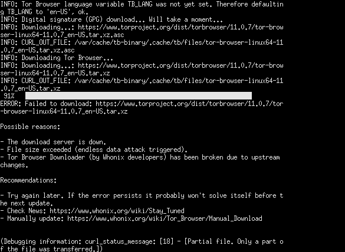
Possible reasons:
- Internet connectivity issue.
- The download server is down.
- File size exceeded (endless data attack triggered).
- Tor Browser Downloader (by Whonix developers) has been broken due to upstream changes.
Recommendations:
- If this happened during an APT upgrade, this will not fix itself. In that case, the user must manually take steps to Update Tor Browser.
- Wait a bit and try again later.
- If the error persists it probably won't solve itself before the next update.
- Check News: Stay Tuned
- Last resort, Tor Browser manual updates.
Expired Key
Tor Browser Downloader (by Whonix Developers):
- Can only automate what is supported by upstream, The Tor Project anyhow.
- Is fully optional. A usability feature. It does not do anything that could not also be done manually by the user.
First, exercise: verify Tor Browser according to upstream instructions. Unspecific to Whonix. If that is not possible, if that includes "key expired" then nothing that can be fixed in Whonix.
Tor Browser Internal Updater
Tor Browser upgrades are possible from within the browser using Tor
Browser Internal Updater (by The Tor Project).
[95] When a new Tor Browser version is available but the
browser has not completed an automatic upgrade in the background (the
default), a warning prompt appears recommending a manual upgrade. To
upgrade, either:
Enterabout:preferencesin the URL bar→Scroll down to "Tor Browser Updates"→Click "Check for updates"; orOpen Menu→Help→About Tor Browser→Wait until the download finishes→Restart to update Tor Browser
Figure: Tor Browser Update Notification
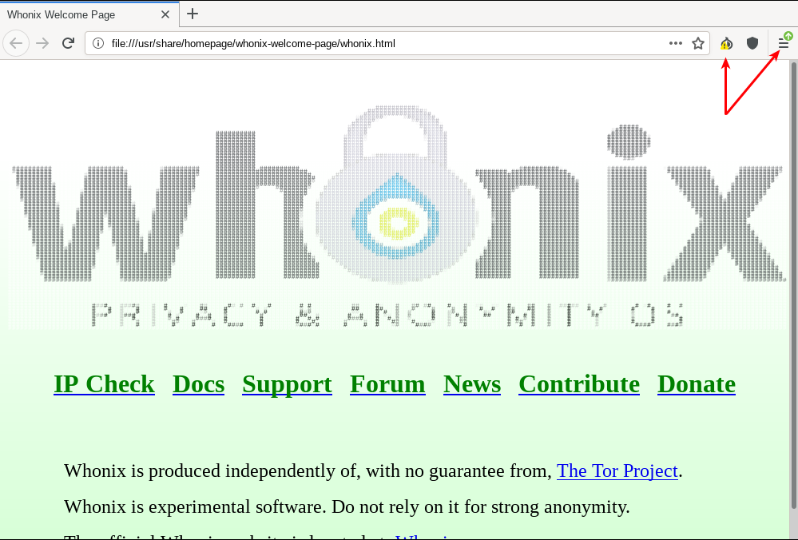
Using Tor Browser Internal Updater automatically makes use of its built-in software signatures verification feature. [96] Manual software resignation verification is not required when using this update method.
Tor Browser Manual Update
 If the Tor Browser update script ever breaks it is advised to update manually.
If the Tor Browser update script ever breaks it is advised to update manually.
Modern Tor Browser releases are generally easy to install and update on well-supported platforms like Whonix, leading most to have a comfortable and reliable experience over long periods. However, if/when Tor Browser "breaks", some might find it difficult to perform a manual installation. [97]
Whonix Bugs
Sometimes Tor Browser Downloader inside Whonix-Workstation breaks because torproject.org changes the way Tor Browser can be downloaded or verified. This program is maintained by the Whonix contributors and The Tor Project is not responsible for necessary fixes. Generally, Whonix news will be published within a few days with working instructions on how to fix the problem. If this does not happen, then Whonix developers are unaware of the issue.
Any bugs should be discussed in the Whonix User Help Forum. To date, no bugs were ever discovered in Tor Browser that were directly related to Whonix code and which might cause serious problems such as website pages failing to load.
Prerequisite Knowledge
The manual Tor Browser download procedure assumes essential knowledge of:
- Software Verification: For better security, the Tor Browser package should be verified with GnuPG, using the associated file signature and Tor signing keys (relevant links are provided). [98]
- Troubleshooting: If Tor Browser problems occur in Whonix such
as webpages failing to resolve, then:
- The same tests should be performed on the host (Non-Qubes-Whonix) or in a non-Whonix VM (Qubes-Whonix); see Non-Whonix Tor Browser. This step helps to determine whether the problem is related to Whonix or not.
- It is also sensible to search for the problem on torproject.org's bug tracker and report a bug upstream if it has not been notified yet. In that case, when upstream (TPO) fixes the issue, the issue will most likely also get fixed in Whonix.
Unsafe Tor Browser Habits
It is important to develop a set of safe habits when communicating, browsing or downloading with Tor Browser. Even the world's premier anonymity software cannot protect people if they shoot themselves in the foot.
The following is an inexhaustive list of unsafe behaviors. It is recommended to also read the Whonix Tips on Remaining Anonymous entry, along with Tor Project documentation before using Tor Browser for serious activities necessitating anonymity.
Category |
Insecure Configuration or Behavior |
|---|---|
Add-ons |
Avoid: Add non-default add-ons to Tor Browser. |
Anonymity Modes |
Avoid: Mix modes of anonymity. |
Bookmarks |
Bad habit: Use the bookmarking feature in Tor Browser; bookmarks can be used as a tracker if the page is special/unique to you. [99] [100] |
Bridges |
Bad habit: Expect that Tor relay bridges will absolutely disguise all use of Tor / Tor Browser. |
Browser Settings |
Avoid: Change browser settings if the implications are
unknown. [101] |
Communications |
Avoid: Send "anonymous" communications or other data over unencrypted channels using plain HTTP. |
File Downloads |
Avoid: Torrent over Tor. |
Full Screen |
|
HTML5 Canvas Image Data |
Avoid: Allow extraction of canvas image data by websites. |
Identities |
Avoid: Disclose identifying data. Avoid: Use different online identities at the same time. |
JavaScript |
Avoid: Enable JavaScript for websites of a dubious nature. |
Links |
Avoid: Enter sensitive information into websites
before verifying their authenticity due to potential phishing attacks. Avoid: Routinely
click on URL-shortened links. [103] |
Logins |
Avoid: Login to Google, Facebook or other
corporate accounts with a real name or pseudonym. [105] |
Local Connections |
Avoid: Configure a local connection exception for applications, unless aware of the risks. |
Multiple Tab Isolation |
Bad habit: Assume that different tabs in Tor Browser are completely isolated and recognized as different pseudonyms by destination websites. Tor Browser has some first party isolation that isolates local storage such as cookies per-website. However, there are certain side channel attacks that can be used to bypass this. [106] FingerprintJS (Browser Tests) demonstrates its capability of linking two different tabs in Tor Browser to the same identifier. A malicious or compromised website may also be able to exploit a vulnerability in the browser to see your activities in website y since Firefox's sandbox does not isolate websites from each other yet. [107] Better use Multiple Whonix-Workstation. |
Networking |
Avoid: Configure Tor Browser so that it leads to a Tor over Tor scenario. |
Other Browsers |
Avoid: Use browsers other than Tor Browser with Tor. |
Passwords and Usernames |
Avoid: Save passwords and usernames with the Tor Browser Password Manager feature. [108] [109] [110] [111] |
Personal Websites and Links |
Avoid: Visit personal websites over Tor. |
Phone Verification |
Avoid: Use (mobile) phone verification. |
Proxy Settings |
Avoid: Change or remove default proxy settings if unaware of the implications. |
Qubes-Whonix |
Avoid: Launch Tor Browser in a Template ( |
Screen Resolution |
Avoid: Using anything other than the recommended screen resolution. |
Server Connections |
Avoid: Connect to a server anonymously and non-anonymously at the same time. |
Tor Browser Functions |
Bad habit: Use the "New Identity" and "New Tor Circuit for this Site" functions and expect complete anonymity in the following browsing session. |
Updates |
Avoid: Ignore download
and/or installation confirmation notifications or warnings
when updating Tor Browser. |
User Mentality |
Bad habit: Feel invincible running Tor Browser (irrespective of the platform), due to significant adversary capabilities and interest in unmasking or infecting Tor users. |
Window Size |
browser
window size Avoid: Maximize or change the
browser default window size setting. |
Virtual Machine (VM) Multiple Purpose Use |
Bad habit: Reusing the same VM for browsing and other applications.
Consider using Multiple Whonix-Workstation if installing additional software. It is safer to compartmentalize discrete activities to minimize the threat of VM Fingerprinting. This protects from the schemeflood vulnerability, which could be used for browser fingerprinting / identity correlation among VM / browser restarts. See also schemeflood.com (Browser Test). |
Whonix Tor Browser Differences
Tor Browser Downloader (by Whonix developers) Differences
Tor Browser Downloader (by Whonix developers) essentially is and does:
- An optional usability enhancement, a tool, Tor Browser Downloader.
- Download Tor Browser.
- Perform digital signature verification.
- Extracts Tor Browser to folder
~/.tb/tor-browser.
Tor Browser Downloader (by Whonix developers) is not and does not:
- A mandatory requirement to download and use Tor Browser inside Whonix.
- Modify any files inside the Tor Browser folder
~/.tb/tor-browser.
Does Whonix Change Default Tor Browser Settings?
Tor Browser changes implemented by Tor developers are sometimes mistakenly attributed to Whonix developers: [115] [116]
I've been looking for how to fix some bad default settings in the Whonix tor browser. Namely, they removed NoScript from the toolbar, so that the NoScript cannot be used as intended.
As noted in the Whonix Tor Browser Differences entry, Whonix does not:
- Apply file system level changes to the Tor Browser folder. In other words, there are no modifications of any files inside Tor Browser's data folder. Files such as startup script, default settings and so on are untouched.
- Change Tor Browser's internal updater checking mechanism;
- Change or remove proxy settings by default; or
In fact, the NoScript URL bar change was a conscious decision by Tor developers which became part of a recent release: [117] [118] [119] [120] [121]
Quote Tor Browser developer Nicolas Vigier (@boklm):
NoScript and HTTPS Everywhere are still present in the URL bar if you upgraded from an older version. They are not present if you did a new install with a recent version.
If you want to turn off javascript, then you can change the security level. There is also nothing preventing you from adding NoScript on the toolbar even if it is not there by default.
Tor Browser Bundle versus Whonix Tor Browser
The regular Tor Browser Bundle and Whonix Tor Browser slightly differ. The reason is Tor Browser must be adjusted by Whonix to work behind Whonix-Gateway.
The main Whonix Tor Browser differences can be summarized as follows: [122]
- All changes are done through global environmental variable adjustments. [123]
- Despite environmental variable adjustments, the network and browser fingerprint remain the same.
- tor-launcher (Tor connection wizard) will not be shown in Whonix-Workstation Tor Browser. Instead, Anon Connection Wizard is available in Whonix-Gateway.
- The Tor Circuit View and Open Network Settings functions have been disabled. The former is unsupported for security reasons, [124] while the latter would have no effect since Tor must be configured in Whonix-Gateway.
- The default landing page after Tor Browser starts is set to a local Whonix resource through an environment variable. [125]
- Tor over Tor scenarios are prevented in Whonix-Workstation. [126]
- Extracted to folder
~/.tb/tor-browser.
Whonix does not:
- Apply file system level changes to the Tor Browser folder. In other words, there are no modifications of any files inside Tor Browser's data folder. Files such as startup script, default settings and so on are untouched.; [127]
- Change Tor Browser's Internal Updater checking mechanism;
- Change or remove proxy settings by default.
Changes are kept minimal and for integration purposes only. This is a deliberate design decision. Quote Tor Browser, advanced users, Tor Browser Update: Technical Details:
Therefore it would be unwise for a downstream Linux distribution such as Whonix to attempt to separate binaries and user data.
Tor Browser Functionality on Different Platforms
 It is not valid
to make a comparison between the Windows version of Tor
Browser Bundle (TBB) and the Whonix Tor Browser concerning
functionality, for instance why the warning message does not appear in
Whonix when maximizing the browser window. [128]
It is not valid
to make a comparison between the Windows version of Tor
Browser Bundle (TBB) and the Whonix Tor Browser concerning
functionality, for instance why the warning message does not appear in
Whonix when maximizing the browser window. [128]
The reason is this comparison includes a host of platform-specific differences which confound the result. For example, a more valid comparison would examine the differences between:
- TBB in Debian (real Debian, not in Qubes) versus Tor Browser in Non-Qubes-Whonix.
- TBB in a Qubes App Qube based on a Debian Template versus Tor Browser in Qubes-Whonix.
Similarly, these comparisons would be helpful in order to help with TBB (non-Whonix) development:
- TBB in Debian (real Debian, not in Qubes) vs TBB in Windows.
- TBB in different Linux distributions.
- TBB in different Windows platforms.
Homepage
Whonix has its own Tor Browser homepage. (forum discussion: Local browser homepage for Tor Browser in Whonix)
Related: Setting up a Tor Browser Custom Homepage
Your connection to Tor is not being managed by Tor Browser
Figure: Tor Browser "Your connection to Tor is not being managed by Tor Browser" Message
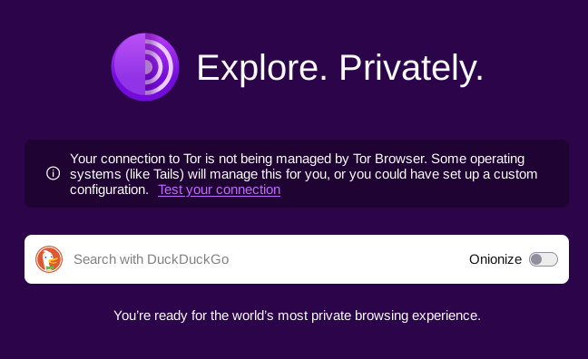
There is a related Tor Browser upstream bug: Environment variable `TOR_DEFAULT_HOMEPAGE` is no longer honored when Tor Browser is restarted using its new identity button
This means after using Tor Browser's new identity button, the following message can be seen.
Your connection to Tor is not being managed by Tor Browser. Some operating systems (like Tails) will manage this for you, or you could have set up a custom configuration. Test your connectionTor Browser Homepage in Whonix
The information "Your connection to Tor is not being managed by Tor Browser" is true and expected. This simply means that Tor connection settings cannot be modified from within Whonix-Workstation using Tor Browser. The connection is managed by Whonix-Gateway. This is documented in chapter Tor Browser Bundle versus Whonix Tor Browser. For information on how to configure Tor, see the dedicated wiki page about Tor.
Troubleshooting
Close Tor Browser
Sometimes the following error message appears when no Tor Browser window is open.
Figure: Running Tor Browser Instance
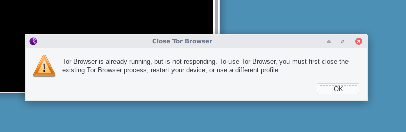
Tor Browser is already running, but is not responding. To use Tor Browser, you must first close the existing Tor Browser process, restart your device, or use a different profile.
Most likely Tor Browser is still/already running in the background but without a visible desktop environment window due to an existing software bug.
To kill the Tor Browser process, run the following command.
pkill firefox.real
See also: Tor Browser Crash Errors.
Restart Tor Browser
Simply close all Tor Browser windows and restart Tor Browser. This is in most cases sufficient for a Tor Browser restart.
In case of issues the user might want to:
Confirm Terminated Tor Browser
While Tor Browser windows might have been closed, Tor Browser might still be running in the background due to a bug. To confirm that Tor Browser has really been terminated there are two options.
- A) System reboot method: This is the simplest method. By simply restarting the Whonix-Workstation it is guaranteed that Tor Browser will be terminated.
- B) Manual process viewing method:
pgrep firefox
Example output if still running:
Note: The process number (pid) will most likely be different.
259109Example output if not running:
zsh: exit 1 pgrep firefoxSee footnote for alternative command. [129]
Force Terminate Tor Browser
To kill Tor Browser, run.
killall firefox.real
Example output if still running:
Note: This means "none".
Example output if not running:
firefox.real: no process found
zsh: exit 1 killall firefox.realTor Browser Download, Installation and Digital Software Verification Issues
- Check Whonix forums for existing discussions.
- Compare with Tor Browser outside of Whonix as per Tor Browser Reliability Recommendations.
- See Tor Browser Manual Update.
Tor Browser Reliability Recommendations
 It is recommended to always have the latest Tor Browser
Bundle (TBB) (.onion)
installed outside of Whonix. Just in case. This can be useful in case
there are any Tor Browser Download, Installation and Digital Software
Verification Issues or other problems such as browser crashes or
high CPU usage.
It is recommended to always have the latest Tor Browser
Bundle (TBB) (.onion)
installed outside of Whonix. Just in case. This can be useful in case
there are any Tor Browser Download, Installation and Digital Software
Verification Issues or other problems such as browser crashes or
high CPU usage.
Platform specific.
- Non-Qubes-Whonix users: It is recommended to always have TBB installed on the host operating system (OS).
- Qubes-Whonix users: It is recommended to always have TBB installed in a non-Whonix Template, like (preferably) Debian, Fedora.
For avoidance of doubt, Whonix users should always prefer using Tor Browser inside of Whonix. A copy of Tor Browser outside of Whonix is only recommended in case there will be any issues with future Tor Browser versions.
This is an application of the Generic Bug Reproduction concept.
This process is useful to test whether or not there are any issues related to TBB with:
- downloading,
- digital software verification, or
- installation.
- Another benefit of installing TBB in this fashion is that if Tor Browser unexpectedly stops running in Whonix, then Tor Browser can still be independently used to visit the Whonix website for a solution to this issue.
If TBB fails to properly download, pass digital software signature verification or installation on the host operating system or from a non-Whonix App Qube in Qubes, then Tor Browser inside Whonix will similarly fail to work.
There are two options to install TBB outside of Whonix.
- A) Using Tor Browser Downloader (by Whonix
developers).
- Refer to the Install Non-Whonix Tor Browser using Tor Browser Downloader (by Whonix developers) chapter for TBB installation instructions on all platforms.
- The disadvantage of this method is that it will break in case there are TBB download or digital software verification issues. [130]
- B) Manually install Tor Browser.
This process is unspecific to Whonix.
- Navigate to https://www.torproject.org/download/
(.onion)
website and download Tor Browser and the associated file signature
(
.asc). - Read https://support.torproject.org/tbb/how-to-verify-signature/
(.onion)
and learn how to perform digital software signature verification
("
gpg"). Download and import the necessary keys. - Perform digital software signature verification for the Tor Browser download.
- If the old version of Tor Browser is still open, close it.
- Extract Tor Browser:
Right-click on the downloaded archive→extract→extract archive here - The process is complete.
- Start Tor Browser.
For any issues during manual download, digital software verification and installation of TBB, the user should perform Generic Bug Reproduction.
Tor Browser Crash Errors
Occasionally, Tor Browser might crash. Either:
- A) Browser freezes.
- B) No visible browser window.
- C) At browser startup. For example, after a new Tor Browser update is released, errors might occur upon launch. [131] [132]
- D) At browser runtime. [133]
ERROR: Tor Browser ended with non-zero (error) exit code!
Tor Browser was started with:
/home/user/.tb/tor-browser/Browser/start-tor-browser --allow-remote /usr/share/homepage/whonix-welcome-page/whonix.html
Tor Browser exited with code: 1
To see this for yourself, you could try:
Start Menu -> System -> Qterminal
Then run:
torbrowserWhich situation describes your case best?
- A) 1) Happening inside VirtualBox? 2) Using Linux
as host operating system? 3) Tor Browser crash issues happening recently
since host kernel upgrade? If the answer to all 3 questions is "yes"
then see
Linux Host Kernel versus Tor Browser and other Crashes.
- B) Otherwise, see below.
Even though this is happening inside Whonix, the cause is most often
unrelated to Whonix code. Tor Browser is developed by The Tor Project, which is an
independent entity. This is the norm in Linux distributions. To learn
more about such relationships see
 Linux User Experience versus Commercial Operating Systems.
Linux User Experience versus Commercial Operating Systems.
Whonix does integration work to get Tor Browser into the platform. To use a simple analogy, Whonix stays "on the outside". Very few internal modifications are made to Tor Browser as described in the Whonix Tor Browser Differences chapter.
Before attempting to resolve the issue, the user might want to consider to Backup and Restore Browser Settings (or alternatively Backup VMs) if there are any browser bookmarks or settings the user would rather keep.
To remedy this kind of issue, there are three different promising approaches. Choose one.
Delete and Reinstall Tor Browser
If browser settings like bookmarks, saved passwords and so on are not too important, Tor Browser can be completely deleted and reinstalled. Tor Browser usually functions normally after this procedure. The easiest method is using Tor Browser Downloader by Whonix for this process.
Attempt to Debug the Issue
 Debugging attempts are not guaranteed to work, but are encouraged to
help fix outstanding issues.
Debugging attempts are not guaranteed to work, but are encouraged to
help fix outstanding issues.
- During debug attempts, do not use
torbrowsercommand (/usr/bin/torbrowserscript) or the Tor Browser start menu entry because these are provided by Whonix and are not the cause here. - The Tor Project is responsible for errors that emerge when Tor
Browser is started manually or in debug mode.
- Issues such as
Segmentation fault (core dumped)are most likely caused by Tor Browser, not Whonix.
- Issues such as
A) Advanced users can try to start Tor Browser
without the help of /usr/bin/torbrowser by Whonix, thereby
bypassing that part of Whonix Tor Browser integration. Tor Browser
resides in folder ~/.tb/tor-browser. Therefore, Tor Browser
can be launched in Debugging Mode, which is a Tor Browser (not Whonix)
feature. If that does not help...
B) Additionally, the whole
~/.tb/tor-browser folder could be copied to a Debian
trixie machine or better yet, a virtual machine. For better
security, a virtual machine might even be non-networked before attempts
are made to launch Tor Browser. This error is likely to be reproducible
outside Whonix and this step will provide confirmation.
1. Generic Bug Reproduction is unfortunately required.
2. Meaning, the issue is unfortunately required to be reproduced without any reference to Whonix, without using Whonix, outside of Whonix. On Debian.
3. The whole ~/.tb/tor-browser folder
needs to be copied to a Debian trixie machine, ideally a
VM.
4. The issue needs to be reproduced on Debian. Not Whonix.
5. Report the bug to The Tor Project.
6. Please notify Whonix forums about any outcomes.
Be aware the Tor Bug Tracker already has various, existing bug reports related to incremental updates via the Tor Browser internal updater. These are most likely related to Tor Browser launch failures:
- https://gitlab.torproject.org/legacy/trac/-/issues/29771
- https://gitlab.torproject.org/legacy/trac/-/issues/16028
- https://gitlab.torproject.org/search?scope=issues&search=incremental&state=opened
- https://gitlab.torproject.org/search?scope=issues&search=update&state=opened
Backup and Restore Browser Settings
Steps to perform a backup and restore of browser settings (like
bookmarks) are currently undocumented in the Whonix wiki. However, any
online instructions for this process in Tor Browser or even Firefox
should equally apply in Whonix. The only difference is the Whonix Tor
Browser folder location: ~/.tb/tor-browser.
Letterboxing
Users who ignore advice on the screen wiki page and Unsafe Tor Browser Habits table entry browser window size to avoid maximize/resize the Tor Browser window will now notice white borders surrounding the Tor Browser content.
Ever since 9 update I have had white bars at the bottom and top of my browser. Even with using the TBB on non-whonix I still have them. Am I the only one & am I exposed?https://blog.torproject.org/new-release-tor-browser-90
This is
 not an indicator of compromise, but a new fingerprinting defense called
Letterboxing:
not an indicator of compromise, but a new fingerprinting defense called
Letterboxing:
Tor Browser in its default mode is starting with a content window rounded to a multiple of 200px x 100px to prevent fingerprinting the screen dimensions. The strategy here is to put all users in a couple of buckets to make it harder to single them out. That worked so far until users started to resize their windows (e.g. by maximizing them or going into fullscreen mode). Tor Browser 9 ships with a fingerprinting defense for those scenarios as well, which is called Letterboxing, a technique developed by Mozilla and presented earlier this year. It works by adding white margins to a browser window so that the window is as close as possible to the desired size while users are still in a couple of screen size buckets that prevent singling them out with the help of screen dimensions.https://blog.torproject.org/new-release-tor-browser-90
Forum discussion: Is anyone having white bars in the TBB? - Tor Browser Letterboxing
Tor Browser Consumes 100% CPU after Clock Sync or Suspend/Resume
An upstream bug
in Tor Browser causes the firefox.real process to consume
excessive CPU whenever the connection to Tor's ControlPort
is broken, which continues until Tor Browser is restarted. This is known
to occur when the sdwdate clock
synchronization daemon is restarted in Whonix-Gateway, whether manually
via the sdwdate-gui time
synchronization systray, or automatically via post-resume hooks. For
details, refer to the related forum discussion.
(original
report on Qubes issue tracker)
As a workaround:
- Open
about:configin the Tor Browser URL bar. - Search for and set
extensions.torbutton.display_circuittofalse. - Restart Tor Browser.
In Qubes-Whonix, see Disposable Customization to make this change persistent in Disposables.
Permission Issues
Tip: If something does not work, do not arbitrarily try to use sudo / root without indication that this would be appropriate. That only risks messing up user home folder permissions. See Inappropriate Use of Root Rights.
Attempt to fix:
1. Open a terminal.
Select your platform.

Non-Qubes-Whonix USER Session
If you are using a graphical Whonix with LXQt, complete the following steps.
Start menu → System Tools →
QTerminal

Non-Qubes-Whonix SYSMAINT Session
In the System Maintenance Panel, under the Misc section,
click Open Terminal.

Qubes-Whonix
If you are using Qubes-Whonix, complete the following steps.
Qubes App Launcher (blue/grey "Q") →
Whonix-Workstation™ App Qube (commonly named anon-whonix)
→ QTerminal
2. Owner Permissions Fix
Run the following command to reset permissions of user
user's home folder /home/user back to owner
user and group user. That command is often
sufficient to fix previous inappropriate use of root rights issues.
sudo chown --recursive user:user /home/user
3. Folder Permission Fix
If that does not resolve permission issues, run the following
slightly more experimental command to set chmod 0770 on all
folders inside the user user's home folder.
[135]
find /home/user -type d -print0 | xargs -0 chmod 0770
4. Files Permission Fix
Similar to the previous step, if that does not resolve permission
issues, run the following slightly more experimental command to grant
user user read and write access on all files inside the
user user's home folder. This may have some disadvantages.
The only known example is for users of git. See footnote
for further information. [136]
chmod --recursive ug+rw /home/user
6. Done.
Chances are good that permission issues have been resolved. Try starting Tor Browser. In case the issue is persisting, the following options could be considered.
Attempt to debug:
Start Tor Browser Start by Whonix in In Verbose Mode. This will show verbose output messages which might be useful for the user to identify the issue. In doubt, Support might help interpreting these messages.
Other options:
- Delete and Reinstall Tor Browser
- Tor Browser Manual Download
- Factory Reset, re-install method
Glossary and Key Terminology
Glossary
It is recommended to become familiar with terms regularly used by The Tor Project and Whonix. One useful resource is the v1.0 Tor glossary which is now available on The Tor Project community wiki page.
Key Terminology
Tor vs Tor Browser
Tor is an anonymizer developed by The Tor Project. Tor Browser is a web browser developed by the Tor Project which is optimized for privacy. Please do not confuse Tor with Tor Browser when conversing about Whonix topics.
Tor Browser Transparent Proxying
The Tor Browser "transparent proxying" feature [137]
and/or the environment variable TOR_TRANSPROXY=1 often
cause confusion. It was an unfortunate naming decision by The Tor
Project. This feature actually removes proxy settings. With no proxy set, the
user's system reverts to its default configuration. The effect of this
decision is that Tor Browser networking will work in a similar fashion
to an unconfigured Firefox browser.
This is potentially dangerous when done outside of Whonix because Tor Browser's transparent proxying feature could result in clearnet traffic; for instance if the gateway does not have a transparent torification feature (like Whonix-Gateway). In the case of Whonix, even if the transparent proxying feature is set, Whonix-Gateway will "torify" traffic and force it through Tor. Similarly, if transparent proxying is set and happens to use a JonDo-Gateway, traffic will be forced through JonDo.
One downside of the transparent proxying feature is that even when it is used inside Whonix, it breaks Tor Browser's top level isolation for each separate tab.
Transparent proxying should not be confused with:
- Tor's
TransPort [address:]port|auto [isolation flags]setting. - Tor's IsolatingProxy.
TODO: expand.
Advanced Users
Refer to this wiki entry if any of the following advanced topics are of interest:
- Tor Browser and former Torbutton design.
- Tor Browser without Tor.
- Setting a custom homepage.
- A custom Whonix configuration or Workstation is in use.
- Proxy settings changes are necessary.
- Differences between tor-launcher and tor-browser launcher.
- Qubes-Whonix topics:
- Split Tor Browser.
- Tor Browser in a Disposable.
- Tor Browser in a Qubes Disposable Template.
- Tor Browser debugging is required.
See Also
- Watching YouTube Videos in Whonix
- Downloading YouTube Videos in Whonix
- Using Tor Browser in Qubes-Whonix
- Tor Browser, Advanced Users
- Non-Whonix Tor Browser
- Verify Tor Browser in Microsoft Windows
- Browser Tests
- tor-ctrl-observer - Tor Connection Destination Viewer
- Browser Plugins
- Geo-blocking
Footnotes
- For a comprehensive list of reasons, readers are encouraged to review some or all of the references in this section.
- https://tb-manual.torproject.org/
- https://blogs.gnome.org/muelli/2018/12/the-patch-that-converts-a-firefox-to-a-tor-browser/
- A good overview of the browser component is provided by The
Tor Project design document.
The Tor Browser is based on Mozilla's Extended Support Release (ESR) Firefox branch. We have a series of patches against this browser to enhance privacy and security. Browser behavior is additionally augmented through the Torbutton extension, though we are in the process of moving this functionality into direct Firefox patches. We also change a number of Firefox preferences from their defaults. Tor process management and configuration are accomplished through the Tor Launcher add-on, which provides the initial Tor configuration splash screen and bootstrap progress bar. Tor Launcher is also compatible with Thunderbird, Instantbird, and XULRunner. To help protect against potential Tor Exit Node eavesdroppers, we include HTTPS-Everywhere. To provide users with optional defense-in-depth against JavaScript and other potential exploit vectors, we also include NoScript. We also modify several extension preferences from their defaults. To provide censorship circumvention in areas where the public Tor network is blocked either by IP or by protocol fingerprint, we include several Pluggable Transports in the distribution. As of this writing, we include Obfs3proxy, Obfs4proxy, Scramblesuit, meek, and FTE.
- DNS is a distributed database that keeps track of computer names and their corresponding IP addresses on the Internet. https://web.stanford.edu/class/msande91si/www-spr04/readings/week1/InternetWhitepaper.htm. DNS servers enable the browser to know where resources are located on the Internet and the corresponding IP address for fetching these.
- See below for a further description of these features.
- On average. Mid-2019 saw a sudden spike to over 3 million users -- in recent years, sharp increases in the number of Tor clients were suspected to be adversary attacks on the network.
- https://en.wikipedia.org/wiki/HTTPS
- HTTPS is not foolproof due to reliance on the Certificate Authority (CA) system that issues digital certificates (private keys) for websites. As a trusted third party, this trust can be abused, or the CAs can be subject to adversary attacks.
- https://2019.www.torproject.org/docs/faq#AmITotallyAnonymous
- https://www.whonix.org
- https://www.eff.org/pages/tor-and-https
- https://riseup.net/en/security/network-security/tor/onionservices-best-practices
- This does not, however, defend against improved cryptanalysis that breaks the underlying ciphers being used, such as the potential emergence of quantum computers. Only post-quantum ciphers resistant to these attacks will prevail.
- https://2019.www.torproject.org/docs/onion-services
- Tests reveal that the v3 onion address defaults to the clearnet search engine if JavaScript is not enabled.
- Extra layers of encryption are not strictly necessary since a fully encrypted tunnel is already established, but they do provide an additional layer of security. Until recently, these certificates would not validate due to the *.onion hostname.
- https://riseup.net/en/security/network-security/tor/onionservices-best-practices
- https://blog.torproject.org/cooking-onions-names-your-onions
- This is why onion addresses appear absurdly long and random.
- Experienced Tor developer Mike Perry has noted that even with
scripts globally enabled, NoScript
still provides significant protection in Tor Browser:
We provide NoScript mostly for the non-filter features it provides, such as click-to-play for media, WebGL and plugins, XSS protection, remote font blockage, and so on.
- https://en.wikipedia.org/wiki/NoScript
XSS effects vary in range from petty nuisance to significant security risk, depending on the sensitivity of the data handled by the vulnerable site and the nature of any security mitigation implemented by the site's owner.
- Anti-clickjacking was previously available to protect against hidden or disguised user interface elements masquerading as trusted web page buttons, links, and so on. This is no longer available following the shift to Firefox extensions in Tor Browser based on Firefox 60 ESR. This feature protected against malicious activation of microphones or webcams, as well as user interaction with hidden elements to steal important financial, personal, or other data.
- https://ianix.com/pub/firefox-addons-and-bandwidth-consumption.html
- https://2019.www.torproject.org/docs/faq#TBBJavaScriptEnabled
- JavaScript has previously been used in Windows to deanonymize Tor Browser users with a zero-day exploit which revealed the computer's MAC address to the attackers.
- Having a large user base is important for strong anonymity, as Roger Dingledine explains here.
- Another related discussion justifying JavaScript's enabling by default was held on tor-talk; see Tor Browser disabling JavaScript anonymity set reduction.
- The Tor Project bug report: NoScript configured to globally allow all scripts
- https://noscript.net/
- https://gitlab.torproject.org/tpo/applications/tor-browser/-/issues/25391
- https://gitlab.torproject.org/legacy/trac/-/issues/25391#note_2277828
- Whonix previously shipped a desktop file and menu options that affected the security slider setting after first launching Tor Browser. However, this feature was removed due to unreliability. See this forum thread for further details.
- It is easier for Tails to change Tor Browser because it is a live distribution, not a persistent Linux distribution upgradeable through the standard package manager mechanism. Due to Tails' significant effort on Tor Browser customization, Tails might lack other security features that were added to Whonix.
- Even if the manpower existed, it would make more sense to establish a new "Privacy Browser" project rather than merge its development with Whonix. At a later stage, the theoretically more secure browser could then be bundled with the Whonix platform.
- Whonix includes Tor Browser by default, with only minor differences.
- Even if Open Source, modifying Tor Browser beyond environment variables might require a rebuild from source code to remove Tor Browser trademarks, which would be a significant effort. * Dev/TPO_Trademark * https://gitlab.torproject.org/legacy/trac/-/issues/19652
- Although there are unresolved tbb-fingerprinting and tbb-linkability issues.
- This preference was first offered in alpha Tor Browser v8.5a2 but is now available in both the alpha and stable Tor Browser series.
- https://gitlab.torproject.org/legacy/trac/-/issues/27175
- https://gitlab.torproject.org/legacy/trac/-/issues/27175#comment:12
- https://blog.torproject.org/new-release-tor-browser-85a2
- The default Tor Browser setting.
- https://tb-manual.torproject.org/plugins/
- https://support.mozilla.org/en-US/kb/find-and-install-add-ons-add-features-to-firefox
- For example, most videos can be viewed in HTML5, which Tor Browser supports and prefers.
- Tips_on_Remaining_Anonymous#Study:_Anonymity_and_Pseudonymity_are_not_the_same
- https://2019.www.torproject.org/docs/torbutton/torbutton-faq.html.en
- * The "New Identity" button sends the protocol command "signal
newnym" to Tor's
ControlPort. ** Further, "signal newnym" does not interfere with long-lived connections such as an SSH or IRC connection originating from other applications. * https://blog.torproject.org/torbutton-141-released * Tor Browser's tab isolation by socks user name should result in using new socks user names and therefore in using new circuits. * While there is no Tor running inside Whonix-Workstation, this is still possible. anon-ws-disable-stacked-tor redirects the connection to Whonix-Gateway, where onion-grater (user documentation) (onion-grater (developer documentation)) is running, forwarding it to Tor. - https://gitlab.torproject.org/legacy/trac/-/issues/9442
- https://tails.boum.org/doc/anonymous_internet/Tor_Browser/index.en.html
- https://tb-manual.torproject.org/security-settings/
- https://blog.torproject.org/new-release-tor-browser-85
- https://gitlab.torproject.org/legacy/trac/-/issues/29825
- Tor Browser Starter by Whonix (
/usr/bin/torbrowser) simply navigates to the Tor Browser folder and runs./start-tor-browser. The former has more features like reporting error conditions or the absence of a Tor Browser folder, generation of non-zero exit code failures, and more. - Or manually navigate to the Tor Browser folder and then launch it in debugging mode. cd ~/.tb/tor-browser/Browser ./start-tor-browser --debug
- https://www.torproject.org/download/
- And that website does not: * Use HTTP Strict Transport Security (HSTS). See also: https://security.stackexchange.com/questions/91092/how-does-bypassing-hsts-with-sslstrip-work-exactly. Without HSTS, sites with non-encrypted resources or sub-domains are vulnerable to SSLstrip. * Have HTTPS-Only Mode enabled. * Use HSTS preloading. * Use HTTP Public Key Pinning. See also: https://news.netcraft.com/archives/2016/03/22/secure-websites-shun-http-public-key-pinning.html. HPKP limits trust to a handful of Certificate Authorities, but is not used by many websites due to the risk of site breakage if keys are not managed vigilantly.
- * https://tb-manual.torproject.org/onion-services/ * https://blog.torproject.org/new-release-tor-browser-95
- * https://github.com/Whonix/onion-grater/blob/master/usr/share/doc/onion-grater-merger/examples/40_onion_authentication.yml
* This was successfully tested with Tor Browser version
11.0.3and11.5a1. - https://blog.torproject.org/new-release-tor-browser-80
- https://blog.torproject.org/new-release-tor-browser-90
- https://www.torproject.org/download/languages/
- Language packs might be another fingerprinting vector, but this issue requires further investigation.
- Since it uses predetermined ports on the localhost.
- https://gitlab.torproject.org/legacy/trac/-/issues/10419
- https://gitlab.torproject.org/legacy/trac/-/issues/11493
- Alternatively it is possible to remove Tor Browser's proxy settings, but this method is still vulnerable to the same fingerprinting issues as configuring an exception. There are also other factors which will worsen the user's fingerprint, such as the breaking of both stream isolation and the tab isolation by socks user name in Tor Browser.
- This does not protect against the sudden loss of networking, which could reveal to the attacker that two activities / accounts suddenly going off-line are probably related.
- https://gitlab.torproject.org/legacy/trac/-/issues/25540
- This does not protect against potential infection of dom0 or the Whonix-Workstation Disposable Template by advanced adversaries. Traces of activity may also be left on storage media or in RAM.
- https://blog.torproject.org/new-release-tor-browser-90a1
- Selfrando (load-time memory randomization) protection is being removed from alpha Tor Browser Linux builds. Although Selfrando provides a security improvement over standard address space layout randomization (ASLR) present in Tor Browser and other browsers, Tor developers believe it is relatively easy for attackers to bypass and not worth the effort.
- The "hardened" Tor Browser series has been deprecated, see: https://gitlab.torproject.org/legacy/trac/-/issues/21912
- Following the official release of the v8.0+ Tor Browser series (based on Firefox 60 ESR), the stable and alpha Tor Browser versions both have a native sandbox.
- Tor Browser Update:Technical Details
- https://tb-manual.torproject.org/updating/
- Issues such as outdated signing keys, updated file locations might have been fixed in the upgraded version. Tor Browser Downloader can download Tor Browser. Tor Browser Downloader cannot upgrade itself. It's upgraded together with standard ("everyday") upgrades.
- Finalize RecommendedTBBVersions format
- Counter downgrade / stale mirror attacks on RecommendedTBBVersions - sign / verify tbb versions file
- For a definition of these attacks, see the threat model of TUF (The Update Framework).
- Adversaries capable of breaking SSL could mount these attacks by replacing RecommendedTBBVersions with invalid, frozen or outdated version information.
- Unfortunately, Tor Browser signatures do not yet provide expiration dates in a manner similar to Debian's valid-until field.
- Rollback attacks are possible because if a computer's clock is wrong, there is no solid basis for comparison.
- That is, a browser and not a messenger or other application.
- GnuPG (OpenPGP) common misconceptions.
- The name of the file is stored in the hash file and verified to match the downloaded file name and hash.
- Tor Browser Update: Technical Details
- Useful for re-installing Tor Browser in that App Qube.
- Updates inside a Disposable VM do not persist after shutdown.
- It is possible to run Tor Browser Downloader by Whonix inside a Disposable as well, probably easiest using Tor Browser Internal Updater and then restarting Tor Browser. However, these updates will not persist due to the Disposable design.
- See tb-updater in Qubes Template for technical details.
- * If the online detected version (e.g.
INFO: Online detected version: 10.5) is different from the desired version, it is possible to manually choose the version to download. This is helpful if the Tor Project has released a new version but the version file. * This might be due to pragmatic reasons (work flow) or perhaps a staged rollout release strategy. (The term staged rollout hasn't been seen; see this definition here.) * https://aus1.torproject.org/torbrowser/update_3/release/downloads.json - https://blog.torproject.org/tor-browser-50-released
Starting with this release, Tor Browser will now also download and apply upgrades in the background, to ensure that users upgrade quicker and with less interaction. This behavior is governed by the about:config pref app.update.auto, but we do not recommend disabling it unless you really know what you're doing.
- The internal updater process involves several automatic steps (source):
1) Tor Browser contacts server "A" and asks if an update is available. If there is an update, then server "A" responds with metadata about the update file (a URL for that file, the size of the file, the SHA512 hash of the file). 2) Tor Browser follows the provided URL and connects to server "B" and downloads the file 3) Tor Browser verifies the size of the file and sha512 hash of the file are as expected 4) Tor Browser verifies the cryptographic signature on the file. Tor Browser has two public keys hard-coded for which signatures on updates will be accepted. The update is installed after all checks pass.
- Before the introduction of Tor Browser's internal updater, manual installation was a difficult task which required the renaming (or deletion) of the old Tor Browser folder before the new version was extracted. If Tor Browser functions "under the hood" are a mystery, then unsurprisingly problems are often encountered during manual installation, particularly on the host.
- Whonix is not a standalone package, but a complete operating system. Whonix has a small team, while torproject.org has a much larger community and dedicated, paid support staff. Therefore, Whonix users are expected to learn Tor Browser essentials in the first instance.
- https://blog.torproject.org/comment/291401#comment-291401
- This does not relate to websites being able to read the bookmarks in
the library, but rather addresses that are appended
with unique parameters like a string of random characters. The
implication is:
If you save a bookmark that contains parameters that mark you as unique and then you start a New Identity, if you open that bookmark, those parameters can be used to continue tracking you in your New Identity.
- For example, it is unsafe to disable Tor Browser protections in order to save cookies for the sake of convenience.
- This changes Tor Browser's fingerprint slightly. Tor project member
sysrqb has
stated:
Your browser is likely not unique, but it is one additional distinguisher from other users. You can see the effect of it on https://arkenfox.github.io/TZP/tzp.html. Under the "screen" section, the "resolution" and "inner/outer window" values should change.
- URL shorteners are often used to mask phishing sites that seek user credentials; for example, this is common for websites designed to look identical to Google Mail, Yahoo Mail, Facebook and others.
- https://www.bleepingcomputer.com/news/security/beware-malicious-home-depot-ad-gets-top-spot-in-google-search/
- https://2019.www.torproject.org/docs/faq.html.en#AmITotallyAnonymous
- See identifier-linkability, sec19-shusterman.pdf, leakuidator.
- Fission is still work in progress.
- https://forums.whonix.org/t/tor-browser-8-5-in-whonix-no-longer-can-save-passwords-and-it-deleted-all-existing-ones/7424
- Mozilla notes:
Even though the Password Manager stores your usernames and passwords on your hard drive in an encrypted format, someone with access to your computer user profile can still see or use them. The Use a Master Password to protect stored logins and passwords article shows you how to prevent this and keep you protected in the event your computer is lost or stolen.
- Unless a strong master password is used to protect usernames and passwords, anyone with access to the computer (remote or physical) can easily see them; see here for further information. Due to their relatively large attack surface, security professionals suggest it is far safer to use a password manager rather than trust browsers with sensitive information.
- A critical security bug was found in the Password Manager in 2018: "If a user saved passwords before Firefox 58 and then later set a master password, an unencrypted copy of these passwords is still accessible."
- Unlike App Qubes where only the /rw/ directories are persistent, Standalones are complete clones of the template which have independent file systems. This means it is more vulnerable to the threat of persistent malware.
- https://forums.whonix.org/t/running-whonix-workstation-as-standalonevm/12008
- * https://gitlab.torproject.org/legacy/trac/-/issues/7255
* https://forums.whonix.org/t/should-still-recommend-against-maximizing-tor-browser-window
Tor Browser in its default mode is starting with a content window rounded to a multiple of 200px x 100px to prevent fingerprinting the screen dimensions. The strategy here is to put all users in a couple of buckets to make it harder to single them out. That worked so far until users started to resize their windows (e.g. by maximizing them or going into fullscreen mode). Tor Browser 9 ships with a fingerprinting defense for those scenarios as well, which is called Letterboxing, a technique developed by Mozilla and presented earlier this year. It works by adding white margins to a browser window so that the window is as close as possible to the desired size while users are still in a couple of screen size buckets that prevent singling them out with the help of screen dimensions.New Release: Tor Browser 9.0
Is using the default window size still recommended?question poster
Yes, the default size is still recommended. But, if users are resizing their window they should get some protection now. Before that we only had the notification bar popping up and essentially saying "Don't do that! Danger!" which was kind of lame. Now, we have something better to offer which fits more to our privacy-by-design goal.gk (Tor Browser Developer)
- https://www.mail-archive.com/qubes-users@googlegroups.com/msg29899.html
- https://www.mail-archive.com/qubes-users@googlegroups.com/msg29573.html
- Tor Bug 30600: Restore NoScript control widget icon to the Tor Browser toolbar
- https://blog.torproject.org/new-release-tor-browser-853/#comment-282733
- https://blog.torproject.org/new-release-tor-browser-853/#comment-282735
- The same blog discussion confirms that moving the NoScript icon back onto the URL bar does not pose a known fingerprinting risk.
- https://gitlab.torproject.org/legacy/trac/-/issues/30570
- https://gitlab.torproject.org/legacy/trac/-/issues/19652
- *
/etc/profile.d/20_whonix-welcome-page.shwhich is symlinked to/etc/X11/Xsession.d/20torbrowser*/usr/libexec/anon-ws-disable-stacked-tor/torbrowser.sh - This is so Whonix-Workstation does not have access to the information about which Tor middle relay or Tor entry guard or Bridges are in use. See also: Indicator for current Circuit Status and Exit IP.
- * https://github.com/Whonix/whonix-welcome-page/blob/master/etc/profile.d/20_whonix-welcome-page.sh
*
/usr/libexec/whonix-welcome-page/env_var.sh* The default Tor Browser Bundle usesabout:toras the landing page. See: https://gitlab.torproject.org/legacy/trac/-/issues/13835 - Dev/anon-ws-disable-stacked-tor
- In Whonix-Workstation, anon-ws-disable-stacked-tor listens on 127.0.0.1 9150 and 9151 (Tor Browser's default ports) and forwards them to Whonix-Gateway 10.152.152.10 9150 (where a Tor SocksPort is listening) and 9151 (where onion-grater (Control Port Filter Proxy) is listening). Tor does not get started by the tor-launcher Firefox add-on because the TOR_SKIP_LAUNCH environment variable has been set set to 1. See also: Dev/anon-ws-disable-stacked-tor.
- No changes have been made in Whonix code to prevent such a warning.
- ps aux | grep firefox
- Still very useful for comparison of TBB outside of Whonix versus Tor Browser inside Whonix.
- https://forums.whonix.org/t/tor-browser-error-perhaps-from-9-0-1-update/8468
- The error is likely related to existing Tor bugs reported against (incremental) updates.
- https://forums.whonix.org/t/tor-browser-ended-with-non-zero-error-exit-code-again/10889
- https://www.reddit.com/r/Whonix/comments/ky7jqr/troubleshooting_i_just_installed_whonix_when_i/
- * As per Debian default user
private groups UPGs each created user will be given
their own group to use. Therefore
chmod0700is not required andchmod0770is OK for all folders inside the user home folder. * The following commandfinds all directories inside user home folder/home/userand sets the "executable" bit on them. If that seems strange or a security issue, it's not, see Why must a folder be executable?. It also grants useruserand UPGuserthe required read and write access inside the user home folder. - Some applications might create write protected files inside the
user's home folder. As user. Do not do this. It is just an example for
explanation! rm -r .git
rm: remove write-protected regular file '.git/objects/1c/f2f7161f7529fd600a706278e06df20eb6dfd6'After running the following command, this protection would be gone. In that case, the user is free to modify the following command to have a more narrow scope, for example. chmod --recursive ug+rw /home/user/.tb chmod --recursive ug+rw /home/user/.cache/tb
- https://gitlab.torproject.org/legacy/trac/-/wikis/doc/TransparentProxy
License
Whonix Tor Browser wiki page Copyright (C) Amnesia Whonix Tor Browser wiki page Copyright (C) 2012 - 2026 ENCRYPTED SUPPORT LLC <adrelanos@whonix.org>
This program comes with ABSOLUTELY NO WARRANTY; for details see the wiki source code. This is free software, and you are welcome to redistribute it under certain conditions; see the wiki source code for details.
Categories: Documentation